← Index · ← Previous · Next →
Authors: Ankit Labh, Ross H. Colman, Jakub Šebesta, Noah Oefele, Elsa Lhotel, Adam Berlie, Paul Steffens, Oksana Zaharko, Pascal Manuel, Iurii Kibalin, Philipp Gegenwart, Dominik Legut, Johanna K. Jochum, Alexander A. Tsirlin, Petr Čermák
Type: both · Category: strongly correlated electrons · PDF: https://arxiv.org/pdf/2608.21316v1
Analysis basis: full PDF text, analyzed in chunks
Topic relevance: analog quantum simulation 3/5
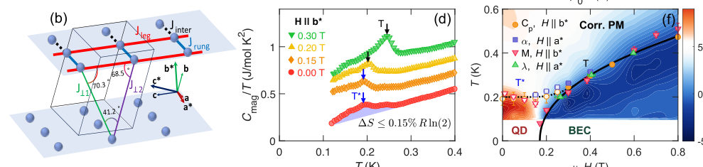
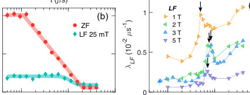
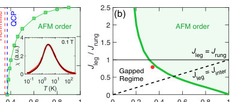
Summary. This paper reports the first observation of ultralow-field Bose-Einstein condensation of triplons in the spin-ladder magnet Henmilite. By combining advanced measurements with QMC simulations, the authors establish that the material resides in a quantum-disordered parent state, extending the BEC concept beyond simpler dimer magnets. This work provides a crucial platform for tuning and studying quantum criticality in fluctuation-dominated magnetic systems.
Why it may be interesting. The work provides a concrete, measurable realization of quantum criticality in a highly correlated magnetic material, using BEC theory to describe the transition, which is relevant to understanding quantum phase transitions in lattice models.
Main problem. The study aims to realize and characterize the ultralow-field Bose-Einstein condensation (BEC) of triplons in a spin-ladder magnet, extending the phenomenon beyond the established dimer magnet paradigm.
Main result. The authors report the first observation of BEC at an ultralow critical field ($\mu_0H_{c1} = 0.17 ext{ T}$) in Henmilite, establishing the material as a platform for studying quantum criticality in a fluctuation-dominated spin ladder.
Method. The research combines multiple experimental techniques (thermodynamic, $\mu ext{SR}$, neutron diffraction) with advanced theoretical modeling, including Quantum Monte Carlo (QMC) simulations and Density Functional Theory (DFT) calculations.
Model / system. The physical system is Henmilite ($ ext{Ca}2 ext{Cu}( ext{OH})_4[ ext{B}( ext{OH})_4]_2$), modeled as a coupled spin-ladder magnet governed by exchange couplings ($J$). The theoretical framework utilizes the BEC description for triplon condensation.}}, J_{ ext{rung}}, J_{ ext{inter}
Key observables. Low-field critical fields ($\mu_0H_{c1} = 0.17 ext{ T}$), the upper critical field ($\mu_0H_{c2} \simeq 8.2 ext{ T}$), magnetic susceptibility, specific heat, and the asymmetry ratio ($m^*/m$).
Important parameters / regimes. The system is characterized by a strong separation between the exchange scale ($J \sim 3-4 ext{ K}$) and the residual gap scale ($\Delta/k_B \simeq 0.245 ext{ K}$), placing it near a quantum-disordered parent state.
Assumptions / limitations. The BEC description assumes small symmetry-breaking terms, and the analysis relies on fitting the system to a coupled-ladder Hamiltonian derived from DFT and QMC simulations.
Figures summary. Figures illustrate the phase diagram showing BEC and correlated regimes, compare zero-field gaps vs. critical fields, and show the magnetic response ($ ext{M}/\mu_0 ext{H}$ and $ ext{C}_{ ext{mag}}/ ext{T}$) across different fields and temperatures.
Paper structure. The paper progresses by first characterizing the parent state (overturning previous order assignments), then measuring the low-field anomaly using multiple probes, establishing the BEC regime, and finally using QMC/DFT to model the underlying spin Hamiltonian and explain the observed critical behavior.
We realise the first ultralow-field Bose-Einstein condensation of triplons in a spin-ladder magnet, uncovering a quantum critical point at only $μ_0 H_{c1}=0.17$ T in Henmilite ($\mathrm{Ca_2Cu(OH)_4[B(OH)_4]_2}$). Unlike dimer magnets, a ladder retains extended one-dimensional correlations in its gapped parent state, making this limit strongly fluctuation dominated. Thermodynamic, magnetoelastic, $μ$SR, and neutron-diffraction measurements overturn the previous assignment of zero-field antiferromagnetic order, establishing a quantum-disordered coupled-ladder parent state with persistent low-energy dynamics. The weak low-temperature anomaly instead marks a gap-controlled crossover from the correlated ladder regime into the activated quantum-disordered state. These measurements further reveal an exceptionally asymmetric ordered dome extending to $μ_0 H_{c2}\simeq 8.2$ T. Quantum Monte Carlo simulations for the relevant spin Hamiltonian place Henmilite just on the gapped side of the zero-field ladder-ordering instability, naturally accounting for the strong separation between the exchange and residual-gap scales and the tiny critical field. Our findings extend ultralow-field triplon condensation beyond the dimer paradigm and establish Henmilite as a platform for controlled tuning across quantum criticality in a fluctuation-dominated spin ladder.
Authors: J. M. S. T. da Silva
Type: theory · Category: quantum information and computing · PDF: https://arxiv.org/pdf/2608.20689v1
Analysis basis: full PDF text, analyzed in chunks
Topic relevance: correlated / nonlocal dissipation 2/5 · driven-dissipative phase transition 2/5 · methods for driven-dissipative 2/5 · Keldysh / 2PI / non-Gaussian methods 1/5 · analog quantum simulation 1/5 · non-equilibrium universality 1/5 · quantum measurements 1/5
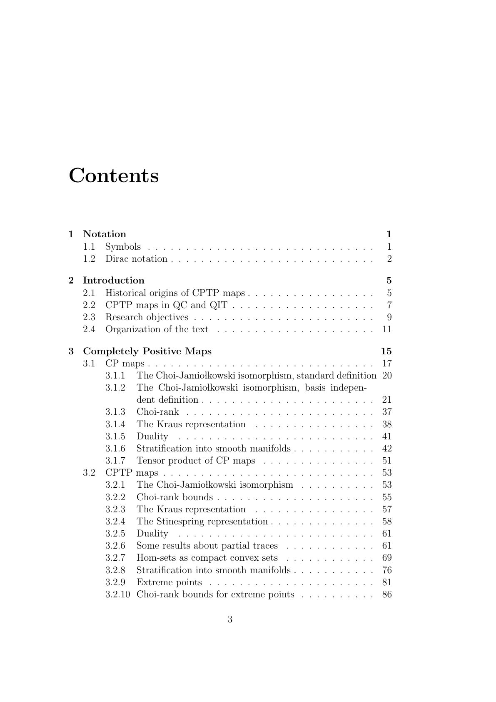
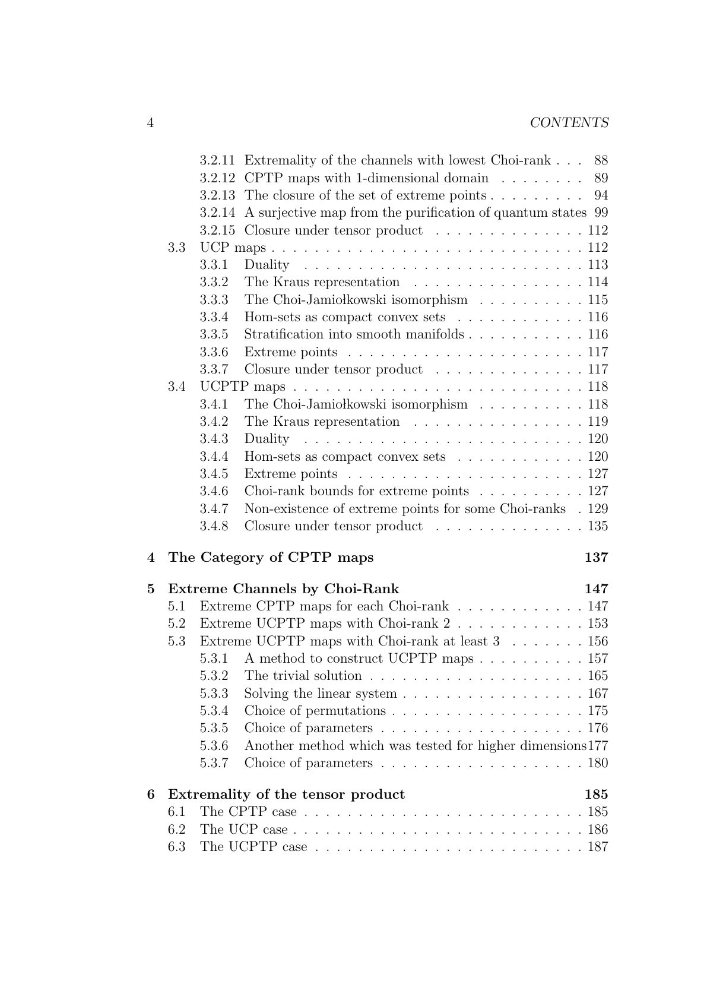
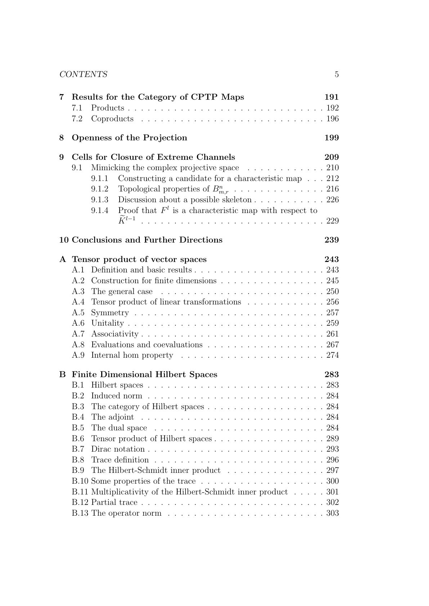
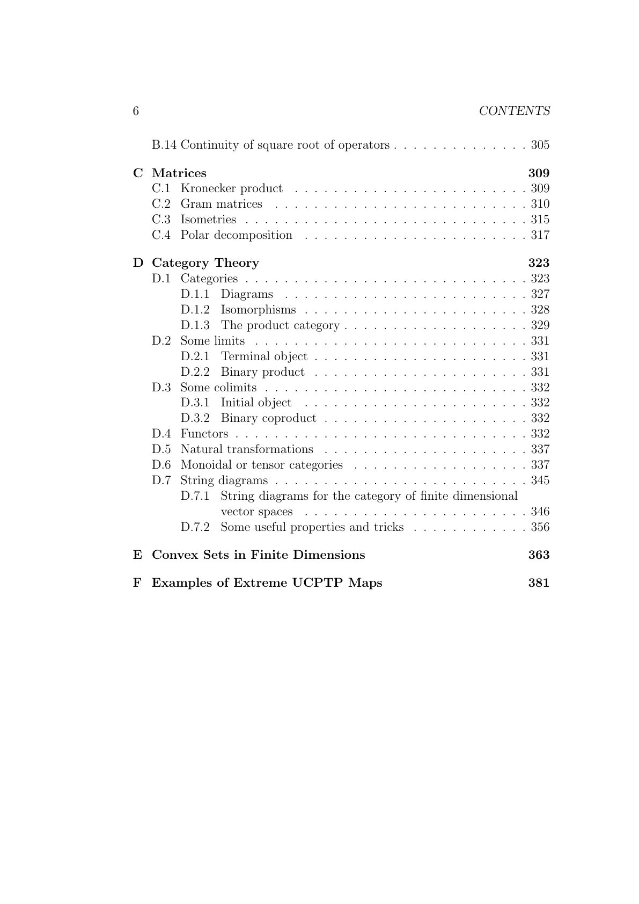
Summary. This thesis provides a deep mathematical study of quantum channels (CPTP maps), treating them as objects within abstract mathematical structures. It characterizes the extreme points of these sets and explores their topological and categorical relationships. The work is fundamental for understanding the mathematical limits and structure of quantum operations.
Why it may be interesting. This is highly relevant as it provides the rigorous mathematical backbone for understanding noise and dissipation in open quantum systems, which is central to quantum information theory and quantum optics.
Main problem. The paper mathematically analyzes quantum channels (CPTP maps), focusing on characterizing their extreme points, topological structure, and categorical properties.
Main result. It establishes that the sets of CPTP and UCPTP maps are compact convex sets, constructing extreme maps for various ranks and proving specific properties regarding the tensor product and existence of products/coproducts.
Method. The work employs advanced mathematical tools, including topological techniques (CW structures), category theory (monoidal categories), and functional analysis applied to quantum operations.
Model / system. The model is the quantum channel, mathematically represented by Completely Positive Trace-Preserving (CPTP) maps acting on density matrices in finite-dimensional complex Hilbert spaces.
Key observables. The primary observables are the quantum channels themselves, characterized by their extreme points, Choi-rank, and structural properties.
Important parameters / regimes. The dimensionality of the Hilbert space ($d$) and the rank of the maps are key parameters explored in the construction of extreme examples.
Assumptions / limitations. The analysis relies on the mathematical framework of Hilbert spaces and the assumption that the sets of quantum channels form compact convex sets.
Figures summary. The notes indicate the presentation of extensive tables detailing parameters for numerous concrete examples of extreme UCPTP maps derived from various mathematical constructions.
Paper structure. The paper systematically reviews CPTP/UCPTP maps, details the structure of the category of CPTP maps, presents constructions and properties of extreme CPTP maps, and concludes with topological investigations into the closure of the extreme point set.
In this thesis, quantum channels are studied from the point of view of Mathematics. We studied the CPTP (completely positive trace preserving) and UCPTP channels, the latter being the unital channels. In both cases, the sets are compact convex, so they are the closure of their extreme points. We constructed extreme CPTP maps for every possible rank. We also constructed extreme UCPTP maps with rank 2 for each possible dimension. For ranks of at least 3, we constructed extreme UCPTP maps for many dimensions and ranks. We also proved that the tensor product of extreme CPTP maps is an extreme CPTP map. For UCPTP maps, we proved that the same is not always true, with many counterexamples. It is known that the category of CPTP maps is semicartesian. We add to this a classification of binary products. We proved that products only exist in trivial cases. For binary coproducts, we obtained the dimensions they should have, if they exist. In both cases, topological techniques were used. For this reason, we also investigated the topology of the closure of the set of extreme points of the CPTP maps. Topological invariants can be computed from decompositions of a space such as CW structures. These are a type of decomposition in which the space is expressed as a gluing of balls. In the search for a CW structure for the closure of the set of extreme CPTP maps, we obtained a partial decomposition that resembles a CW structure of the complex projective space.
Authors: Takeo Moroi
Type: theory · Category: other · PDF: https://arxiv.org/pdf/2608.20745v1
Analysis basis: full PDF text, analyzed in chunks
Topic relevance: quantum measurements 2/5 · Tavis-Cummings & cavity-many-emitter 1/5 · analog quantum simulation 1/5 · correlated / nonlocal dissipation 1/5 · driven-dissipative phase transition 1/5 · methods for driven-dissipative 1/5
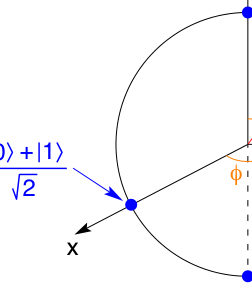
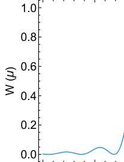
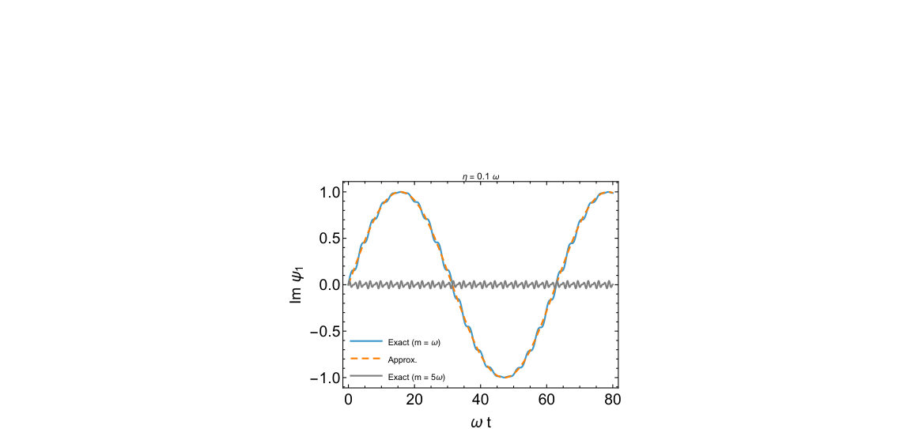
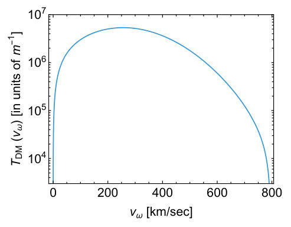
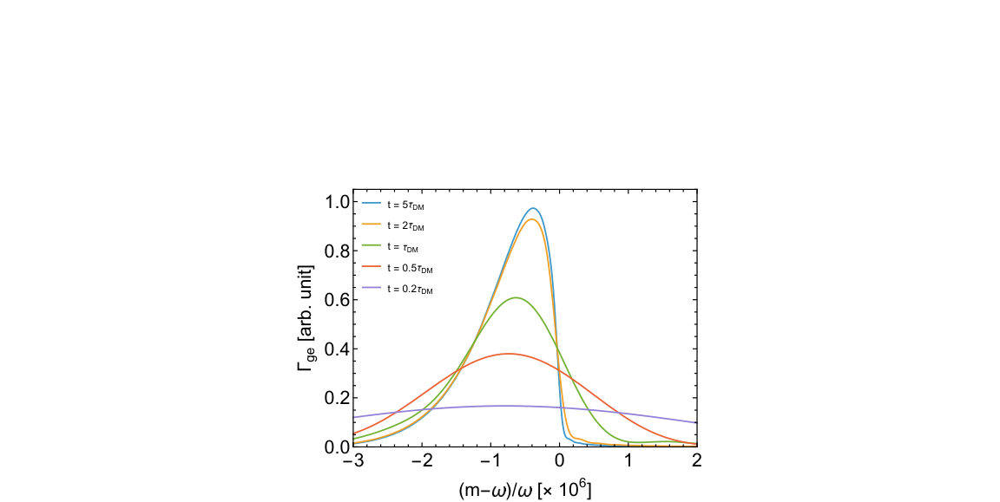
Summary. This review provides an introduction to using quantum qubits as highly sensitive detectors for dark matter, especially wave-like components. It covers the necessary quantum mechanical tools, such as density matrix evolution and quantum sensing limits, to predict potential signal enhancements. The work is crucial for theorists designing next-generation, quantum-enhanced experiments for particle astrophysics.
Why it may be interesting. It bridges quantum information theory (quantum metrology, entanglement) directly into fundamental physics searches (DM), providing a rich theoretical framework for open quantum systems applied to cosmology.
Main problem. The paper reviews the application of quantum sensors, particularly qubits, to the direct detection of wave-like Dark Matter (DM) and physics beyond the Standard Model.
Main result. Qubits offer a promising platform for DM detection, with the potential for quantum enhancement of sensitivity beyond the Standard Quantum Limit.
Method. The review synthesizes theoretical concepts from quantum sensing, including the use of the density matrix formalism, quantum estimation theory (Cramér-Rao bound), and modeling qubit dynamics under external fields and decoherence.
Model / system. The primary system is a qubit (two-level quantum system) interacting with an oscillating electric field induced by DM. The dynamics are modeled using the Lindblad equation, and the framework incorporates concepts from cavity QED (Jaynes-Cummings model).
Key observables. Qubit coherence time ($ au_Q$), Quantum Fisher Information ($F_Q$), and the measurable excitation of the qubit state.
Important parameters / regimes. DM mass ($m$), DM field coherence time ($ au_{DM}$), and the coupling strength between the qubit and the DM field.
Assumptions / limitations. The analysis focuses heavily on the wave-like DM regime and assumes the applicability of quantum sensing limits (SQL/Heisenberg limit) for enhancement.
Figures summary. Not specified, but the notes reference the Bloch sphere diagram and mathematical formalism for qubit states and operators.
Paper structure. The paper progresses from introducing fundamental qubit properties and DM detection concepts to detailing the Hamiltonian dynamics, incorporating noise via the Lindblad equation, and culminating in advanced quantum sensing techniques.
An introductory review is provided for those who are interested in exploring applications of qubits and other quantum excitations to the detection of dark matter (and any other physics beyond the Standard Model). Topics covered include the fundamental properties of qubits, the excitation mechanism of qubits due to the electric field induced by dark matter (with attention to the effects of the coherence of dark matter), the dynamics of coupled qubit-cavity systems modeled by the Jaynes-Cummings framework, and the influence of noise and decoherence (especially Markovian noise described by the Lindblad equation). In addition, the article introduces essential concepts in quantum sensing, including the operator-sum representation and positive operator-valued measures, the Cramér-Rao bound, the standard quantum limit and the Heisenberg limit, and the potential enhancement of sensitivity to dark matter achievable with entangled states. Throughout, these topics are discussed with particular emphasis on their application to the detection of wave-like dark matter.
Authors: Masayuki Ohzeki
Type: theory · Category: disordered systems and neural networks · PDF: https://arxiv.org/pdf/2608.21337v1
Analysis basis: full PDF text, analyzed in chunks
Topic relevance: methods for driven-dissipative 2/5 · quantum measurements 2/5 · driven-dissipative phase transition 1/5 · non-equilibrium universality 1/5
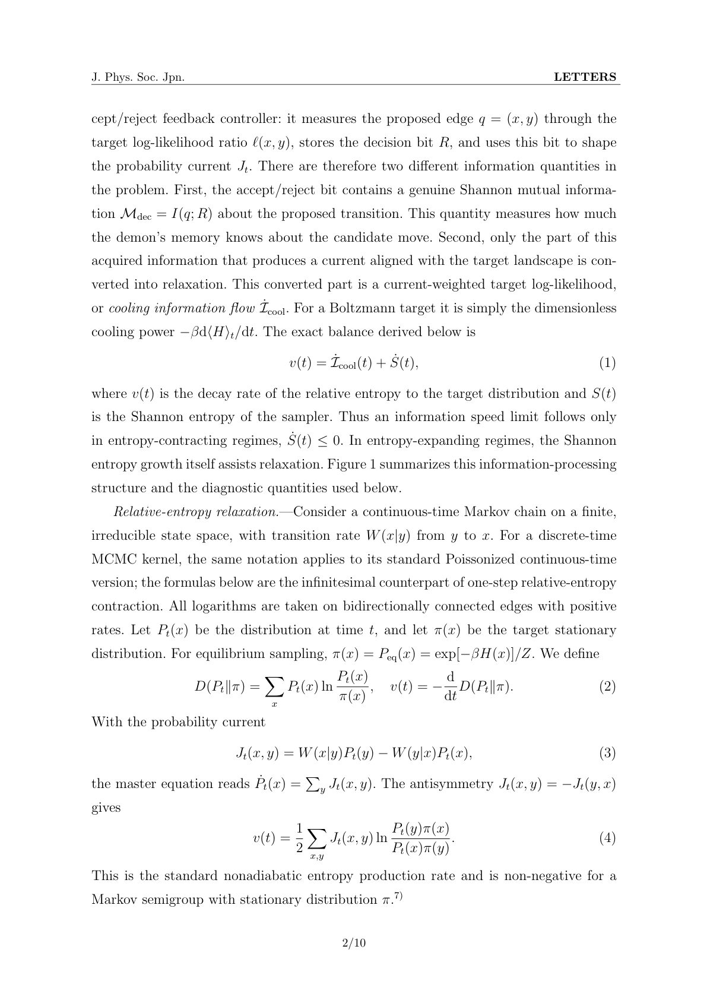
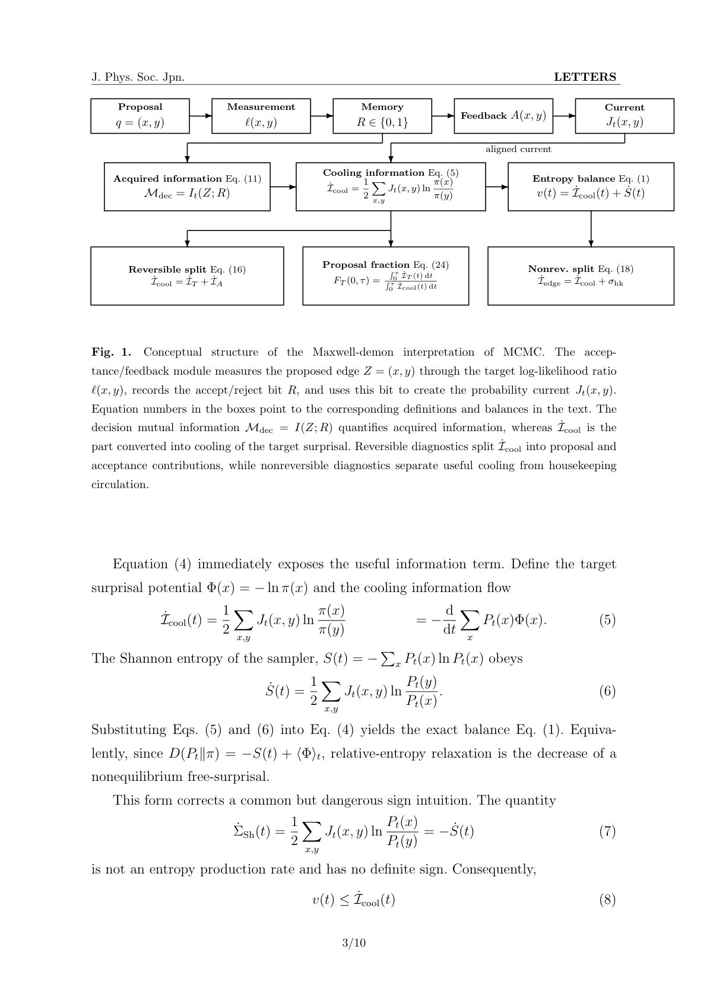
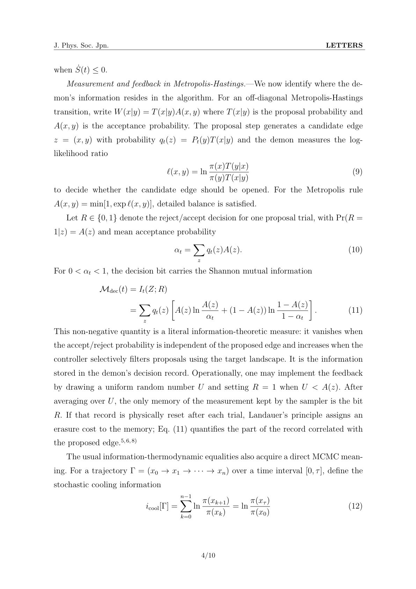
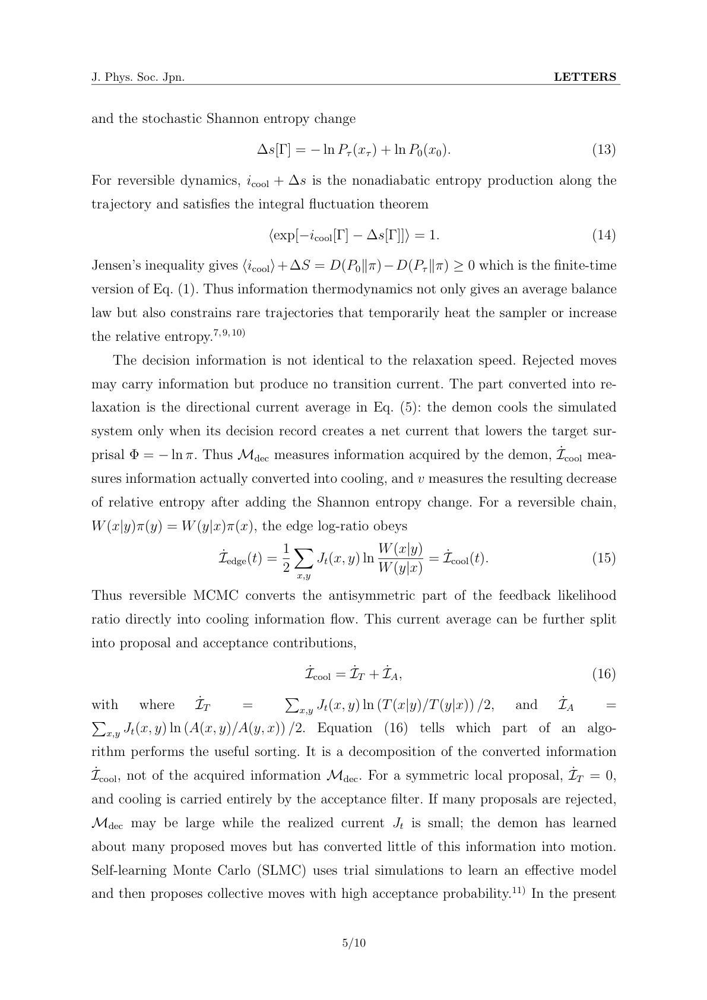
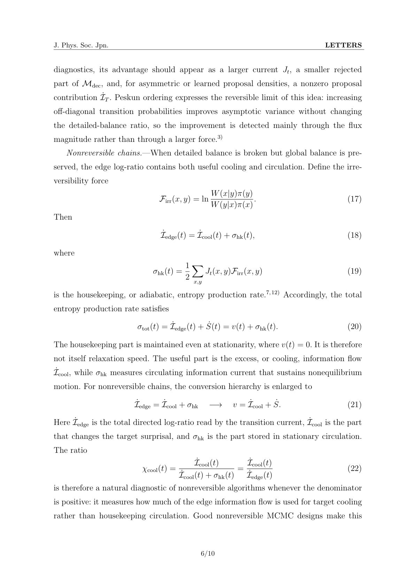
Summary. This paper reinterprets MCMC sampling by modeling the acceptance step as a Maxwell's Demon, quantifying the flow of information. It derives an entropy balance equation that separates useful 'cooling' information from 'housekeeping' circulation. The work provides powerful diagnostics to analyze and accelerate sampling algorithms beyond simple relaxation time measurements.
Why it may be interesting. The rigorous application of information thermodynamics to MCMC provides novel diagnostics for sampling efficiency, which has parallels in understanding energy dissipation and information flow in complex physical systems.
Main problem. The paper aims to mathematically formalize the analogy between Maxwell's Demon and the acceptance module in Markov Chain Monte Carlo (MCMC) algorithms, linking it to information thermodynamics principles.
Main result. It establishes the information balance equation $v(t) = \dot{I}_{cool}(t) + \dot{S}(t)$, showing that acceleration requires maximizing the conversion of decision information into cooling current while minimizing housekeeping circulation.
Method. The analysis uses information-theoretic tools, defining mutual information, cooling information flow, and entropy production rates within the framework of MCMC dynamics.
Model / system. The model is the MCMC sampling process, viewed as a feedback device operating on a state space governed by a master equation. The analysis compares different MCMC kernels (local MH, learned proposal, irreversible drive) on a 50-state rugged ring.
Key observables. Decision Mutual Information ($M_{dec}$), Cooling Information Flow ($\dot{I}_{cool}$), Housekeeping Entropy Production ($\sigma_{hk}$), and the relative-entropy relaxation rate ($v(t)$).
Important parameters / regimes. The target distribution ($\pi(x)$), the acceptance/rejection mechanism, and the relaxation time ($ au_{1/2}$) are key parameters.
Assumptions / limitations. The analysis relies on viewing the MCMC process through the lens of information flow, particularly distinguishing between useful cooling information and housekeeping circulation.
Figures summary. Figure 1 conceptually summarizes the Maxwell-demon interpretation, detailing the flow from Proposal to Measurement to Memory and Feedback to the probability current.
Paper structure. The paper builds from identifying the Maxwell demon analogy in MCMC, deriving the core information balance equation, and then applying this framework to analyze and compare different MCMC kernels (local MH vs. learned/irreversible drives) using quantitative diagnostics.
Markov chain Monte Carlo algorithms can be viewed as feedback devices that compare a proposed move with the target distribution and then accept or reject it. In this paper the Maxwell demon is identified with the acceptance module: it measures a proposed edge, stores the outcome in the accept/reject bit, and uses that bit to shape the probability current. The decision bit carries a genuine Shannon mutual information about the proposal, whereas only its directional part is converted into a cooling information flow. The relative-entropy relaxation rate obeys $v(t)=\dot{\mathcal I}_{\rm cool}(t)+\dot S(t)$, which separates useful cooling from housekeeping circulation in nonreversible chains.
Authors: J. T. Chalker
Type: theory · Category: statistical mechanics · PDF: https://arxiv.org/pdf/2608.21303v1
Analysis basis: full PDF text, analyzed in chunks
Topic relevance: analog quantum simulation 2/5 · non-equilibrium universality 2/5 · methods for driven-dissipative 1/5 · scars & prethermalization 1/5
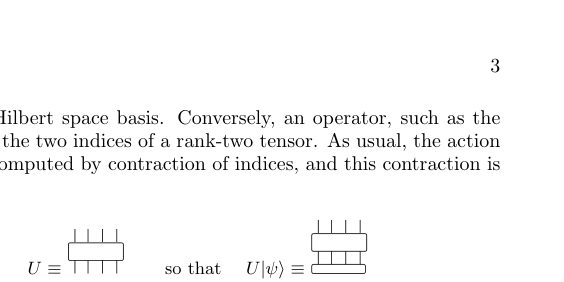
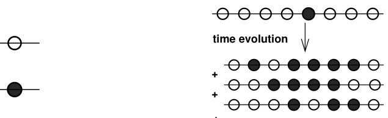
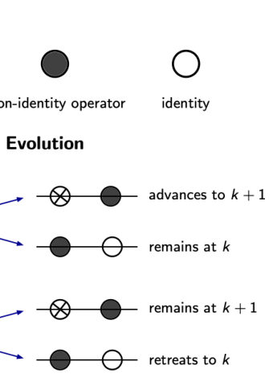
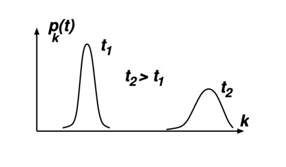
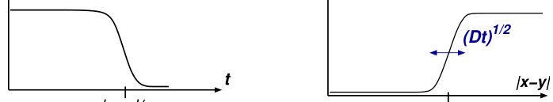
Summary. This paper introduces random quantum circuits as a powerful, universal model to study the dynamics of generic many-body quantum systems. By analyzing operator spreading, entanglement, and spectral correlations using techniques inspired by random matrix theory, it provides theoretical insights into quantum thermalization. It is highly relevant for understanding complex quantum dynamics in systems where simple analytical solutions are unavailable.
Why it may be interesting. This work connects fundamental concepts from random matrix theory (chaos) to concrete, physically realizable models (random circuits), providing powerful tools to study thermalization and quantum chaos in complex many-body systems relevant to AMO physics.
Main problem. To introduce random quantum circuits as simple, universal models for understanding generic, non-integrable many-body quantum systems.
Main result. The analysis provides insights into operator spreading, entanglement dynamics, and spectral correlations, showing that these quantities exhibit universal behavior governed by ensemble averaging.
Method. The approach uses random matrix theory concepts, averaging over ensembles of unitary gates, and analyzing the evolution of operators and state vectors using tensor network formalisms.
Model / system. The core model is the random quantum circuit (RUC) applied to a 1D chain, which serves as a proxy for generic many-body systems lacking simple quasiparticle descriptions. The analysis also considers Random Floquet Circuits (RFCs) and the Random Phase Model (RPM).
Key observables. Operator spreading (Heisenberg picture), entanglement dynamics (Schrödinger picture), and the Spectral Form Factor (SFF), K(t), which measures spectral correlations.
Important parameters / regimes. Local Hilbert space dimension (q), coupling strength ($\epsilon$), system size (L), and time/distance scales relative to coupling energies.
Assumptions / limitations. The analysis relies on ensemble averaging (over random circuits) and assumes locality in the evolution process. The results are expected to be universal.
Figures summary. Figures illustrate tensor network notation for state vectors and operators, the 'brickwork' architecture of quantum circuits, and schematic diagrams detailing the evolution of operator strings and the calculation of the SFF.
Paper structure. The paper progresses from establishing the motivation by contrasting RUCs with simpler models, detailing the mathematical framework using tensor networks, and then applying this framework to calculate specific observables like operator spreading and spectral correlations.
These notes accompany lectures given in June 2025 at the summer school \emph{Fundamental Problems in Statistical Physics XVI}. They offer a short introduction to random quantum circuits as simple models for generic many-body quantum systems. They give an outline of the motivation for introducing these models, starting from ideas of random matrix theory. They also provide a sketch of calculations of some of the quantities of most physical interest, based on an average over an ensemble of systems. These quantities give insights into operator spreading, entanglement dynamics and spectral correlations.
Authors: V. P. Mineev
Type: theory · Category: strongly correlated electrons · PDF: https://arxiv.org/pdf/2608.21161v1
Analysis basis: full PDF text, analyzed in chunks
Topic relevance: Keldysh / 2PI / non-Gaussian methods 2/5 · analog quantum simulation 1/5 · methods for driven-dissipative 1/5 · quantum measurements 1/5
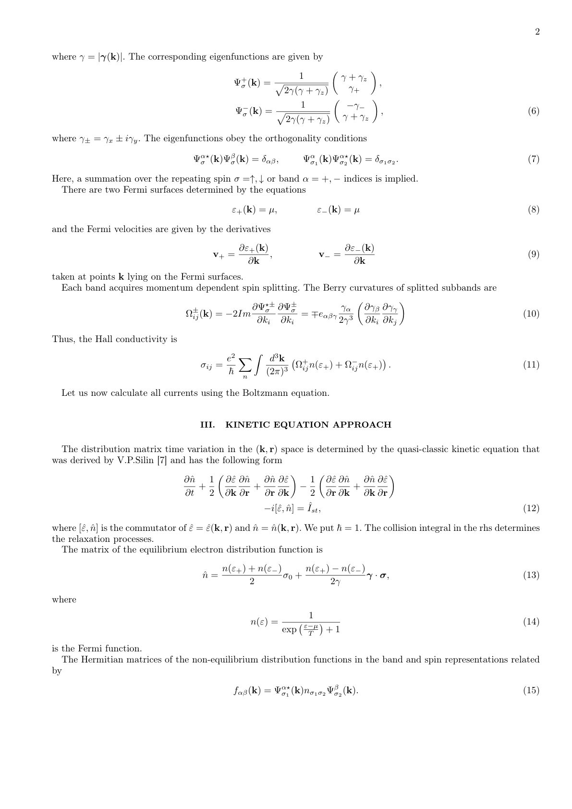
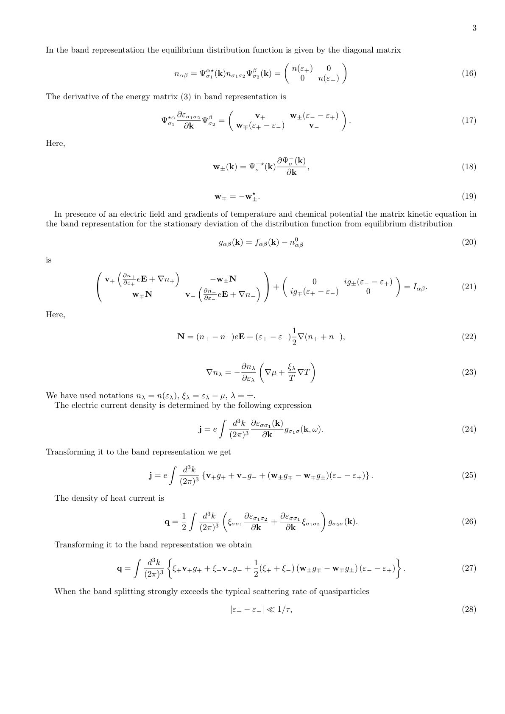
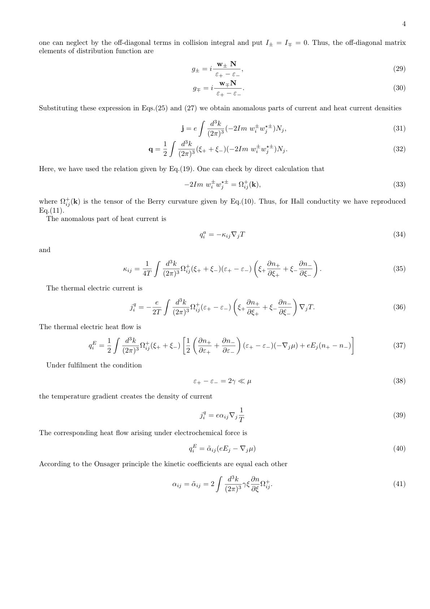
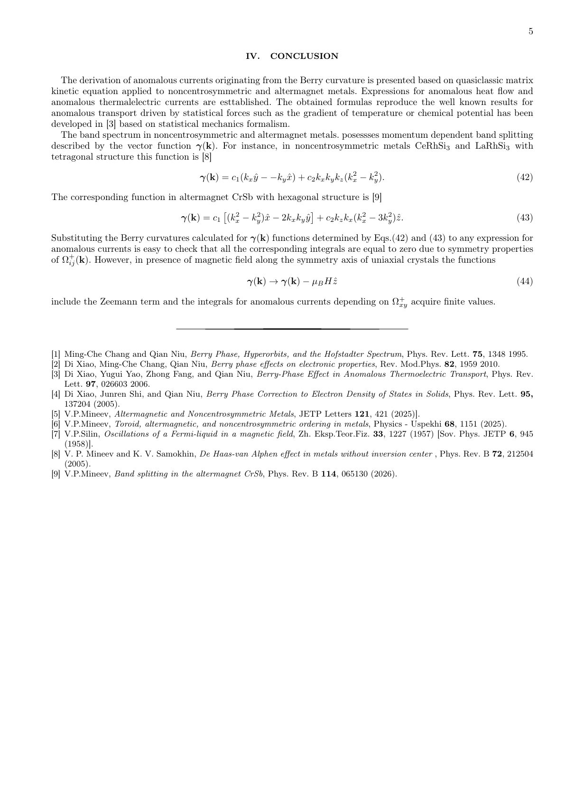
Summary. This paper develops a novel theoretical framework to calculate anomalous transport effects, such as anomalous heat and thermoelectric currents, in specific magnetic metals. It achieves this by adapting the quasi-classical matrix kinetic equation to the band structure. The work provides a robust derivation that reproduces known results while offering a distinct methodological approach.
Why it may be interesting. While focused on solid-state transport, the use of kinetic equations and Berry curvature formalism connects to non-equilibrium dynamics, which has parallels in open quantum systems theory.
Main problem. The paper aims to provide an alternative theoretical derivation of the Berry-phase effect in anomalous transport phenomena within altermagnets and noncentrosymmetric metals.
Main result. The derivation successfully yields expressions for anomalous heat flow, anomalous thermoelectrics currents, and confirms the anomalous Hall effect using the Berry curvature tensor.
Method. The analysis employs the quasi-classical matrix kinetic equation, applied to the band representation of the electron distribution function.
Model / system. The study models electron energy spectra in altermagnetic or noncentrosymmetric metals using a Hamiltonian structure involving Pauli matrices and a momentum-dependent pseudovector $\gamma(k)$.
Key observables. Hall Conductivity ($\sigma_{ij}$), Anomalous Heat Current ($q_a^i$), Thermal Electric Current ($j_q^i$), and Thermal Electric Heat Flow ($q_E^i$).
Important parameters / regimes. The derivation is sensitive to the relative magnitude of the band splitting versus the scattering rate, and the presence of external fields (like magnetic fields).
Assumptions / limitations. The core approximation used is that the band splitting strongly exceeds the scattering rate ($|\varepsilon_+ - \varepsilon_-| \ll 1/ au$).
Paper structure. The paper builds from the general quasi-classical matrix kinetic equation to the specific band representation, applies the necessary approximations, and then derives the anomalous contributions to current and heat flow, linking them to the Berry curvature tensor.
A theory of the Berry-phase effect in anomalous transport in ferromagnets driven by statistical forces such as the gradient of temperature or chemical potential has been developed by Di Xiao et al in Phys. Rev. Lett. 97, 026603 (2006) based on a field-dependent density of states generating an additional contribution to the current density. We present an alternative derivation of the Berry- phase effect in anomalous transport in altermagnets and noncentrosymmertric metals based on quasiclassic matrix kinetic equation. Along with anomalous Hall effect an anomalous heat flow and anomalous thermalelectric currents are also derived.
Authors: J. G. A. Caribé, M. S. Guimaraes, I. Roditi, S. P. Sorella
Type: theory · Category: quantum information and computing · PDF: https://arxiv.org/pdf/2608.20926v1
Analysis basis: full PDF text, analyzed in chunks
Topic relevance: Keldysh / 2PI / non-Gaussian methods 2/5 · quantum measurements 2/5
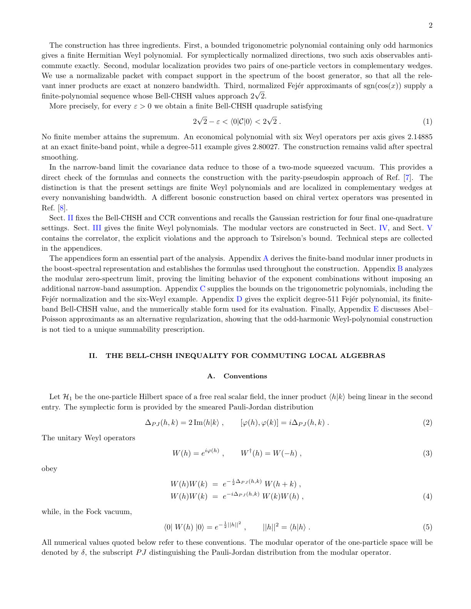
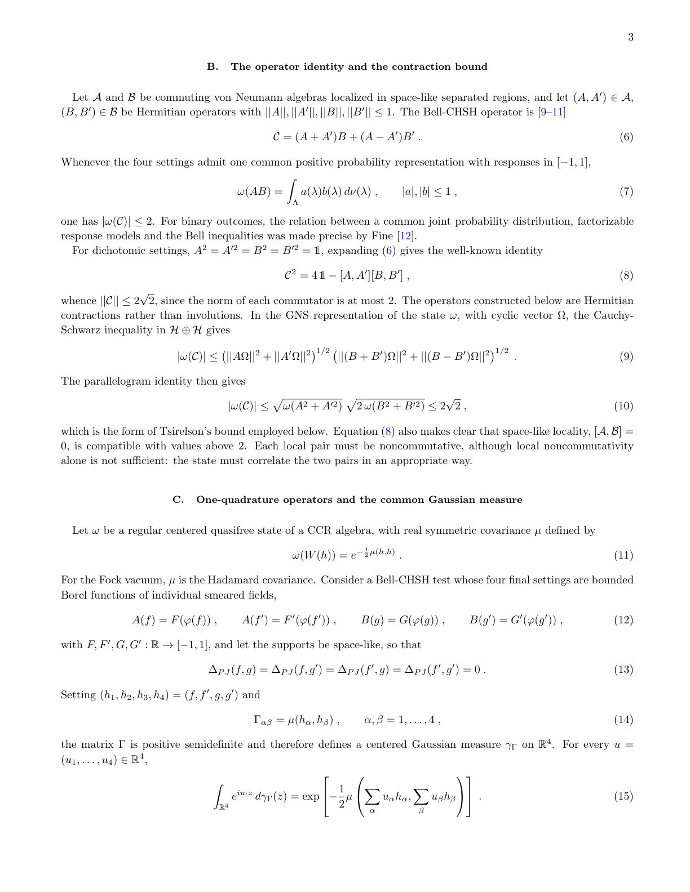
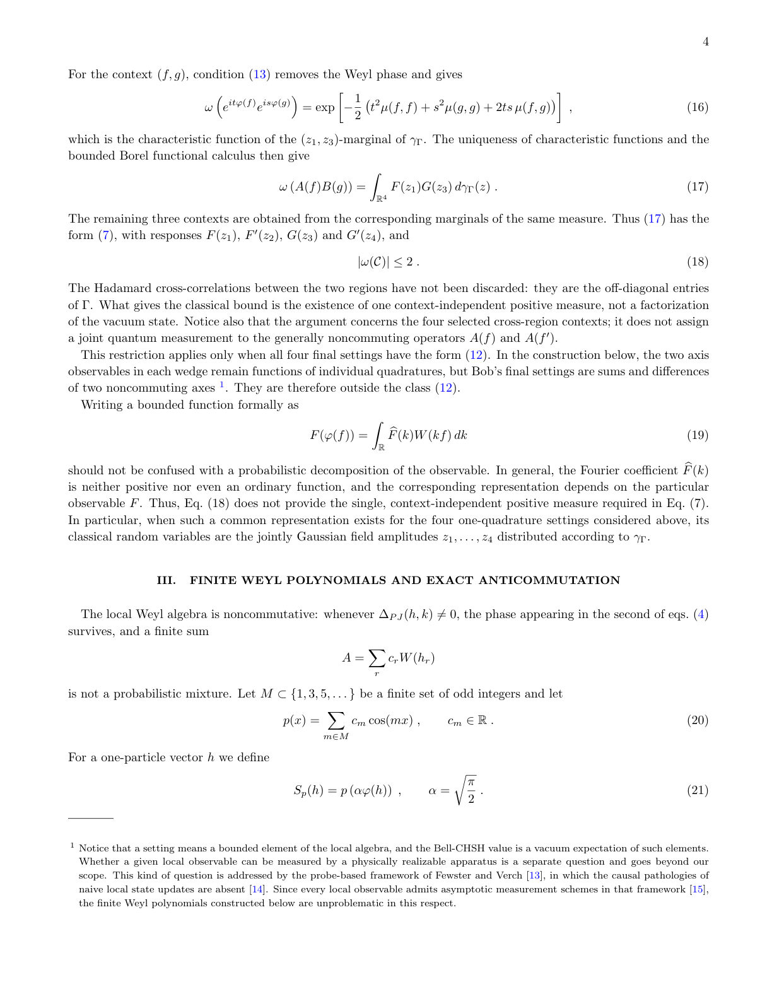
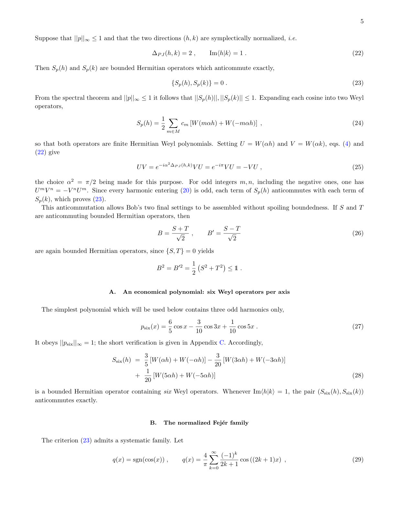
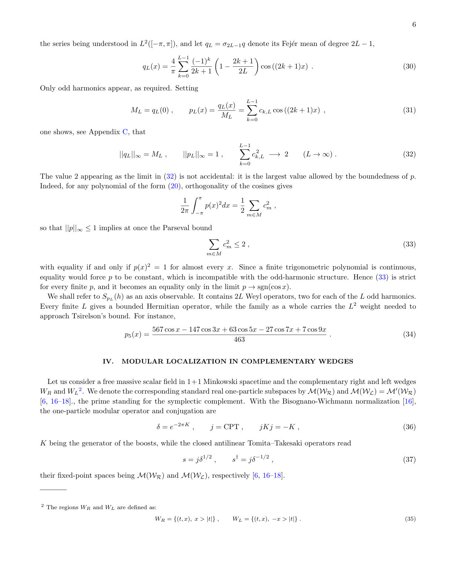
Summary. This theoretical paper constructs local observables for the Bell-CHSH inequality in a free massive scalar field using finite polynomials of Weyl operators. By employing Fejér approximants, the authors show that the resulting Bell-CHSH value can approach Tsirelson's bound of $2\sqrt{2}$. This method is significant because it surpasses limitations found in simpler, one-quadrature settings.
Why it may be interesting. The work provides a concrete, field-theoretic realization of approaching fundamental quantum limits (like Tsirelson's bound) using structured, finite polynomial approximations, which has implications for understanding entanglement bounds in relativistic quantum systems.
Main problem. The paper aims to construct bounded local operators for the Bell-CHSH inequality in a free massive scalar field, specifically to approach Tsirelson's bound ($2\sqrt{2}$).
Main result. The finite-Weyl polynomial construction demonstrates that the Bell-CHSH correlator can approach $2\sqrt{2}$ from below, achieving values like $2.80027$ with a degree-511 polynomial.
Method. The authors construct the operators as finite polynomials of unitary Weyl operators, utilizing techniques involving odd Weyl harmonics and normalized Fejér approximants of trigonometric functions.
Model / system. The physical system is a free massive scalar field in $1+1$ dimensions, analyzed using the framework of Weyl operators and spectral representations in rapidity space.
Key observables. The Bell-CHSH correlator $\langle 0|C|0 angle$ is the primary diagnostic, alongside the construction of four bounded Hermitian operators.
Important parameters / regimes. The degree of the polynomial (e.g., 511) and the bandwidth of the spectral packets are key parameters controlling the approximation quality.
Assumptions / limitations. The construction circumvents the restriction that limits Bell-CHSH tests to $\le 2$ by ensuring Bob's final settings mix two noncommuting axis observables.
Figures summary. The notes detail the calculation of the Bell-CHSH expectation value using specific finite polynomial approximations (e.g., $B_{ ext{spec}}^{511}$ and $B_{511}$), comparing them to the theoretical limit.
Paper structure. The paper builds from the general problem of local operators in QFT, details the construction using Weyl polynomials and spectral localization, and culminates in numerical calculations using Fejér approximants to approach the theoretical bound.
We construct four bounded Hermitian operators, each one a finite polynomial in the unitary Weyl operators, for the Bell-CHSH inequality in a free massive scalar field in $1+1$ dimensions. The operators are localized in complementary wedges. Odd Weyl harmonics provide two exactly anticommuting axis observables in each wedge, while normalizable packets with compact support in the spectrum of the boost generator give exact modular inner products at nonvanishing bandwidth. The resulting Bell-CHSH correlator is a finite double sum. An operator with six Weyl terms per axis already gives $2.14885$. Using normalized Fejér approximants of $\operatorname{sgn}(\cos(x))$, we show that the supremum over the finite-polynomial family equals $2\sqrt{2}$, although no finite member attains it; a degree-$511$ example gives $2.80027$. We also point out that, in a centered quasifree state, a Bell-CHSH test whose four final settings are bounded functions of individual quadratures admits one common Gaussian representation and therefore stays below $2$. The finite-Weyl construction avoids this restriction because Bob's final settings mix two noncommuting axis observables.
Authors: Michele Minervini, Nana Liu, Dhrumil Patel, Mark M. Wilde
Type: theory · Category: statistical mechanics · PDF: https://arxiv.org/pdf/2608.21123v1
Analysis basis: full PDF text, analyzed in chunks
Topic relevance: Keldysh / 2PI / non-Gaussian methods 2/5 · analog quantum simulation 1/5 · quantum measurements 1/5
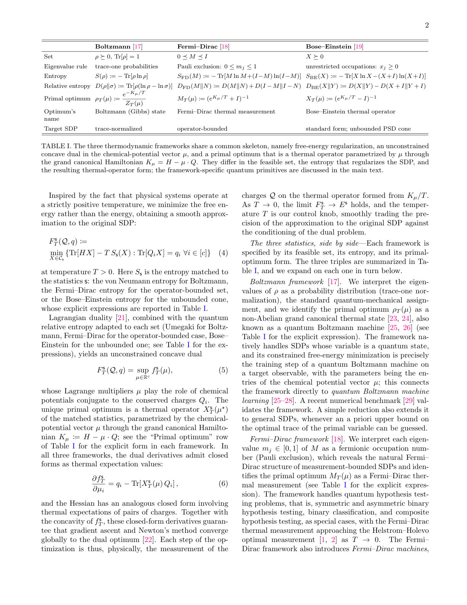
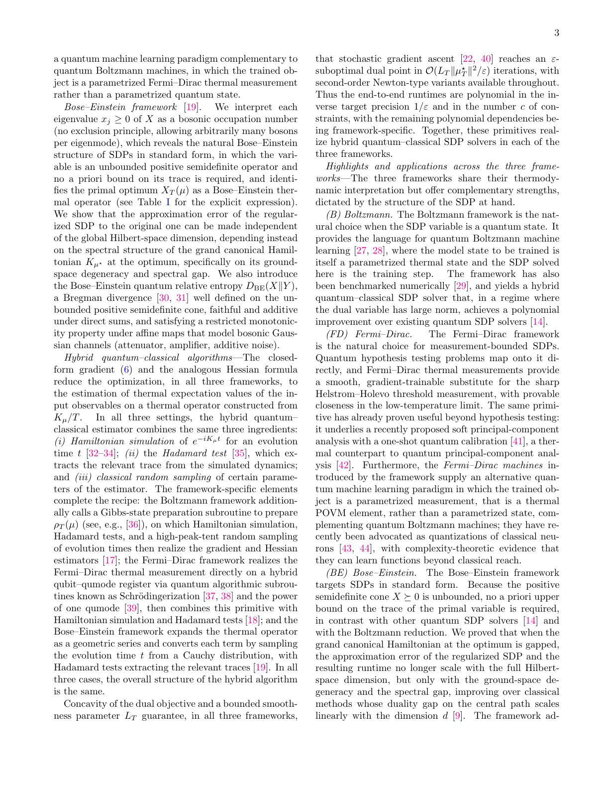
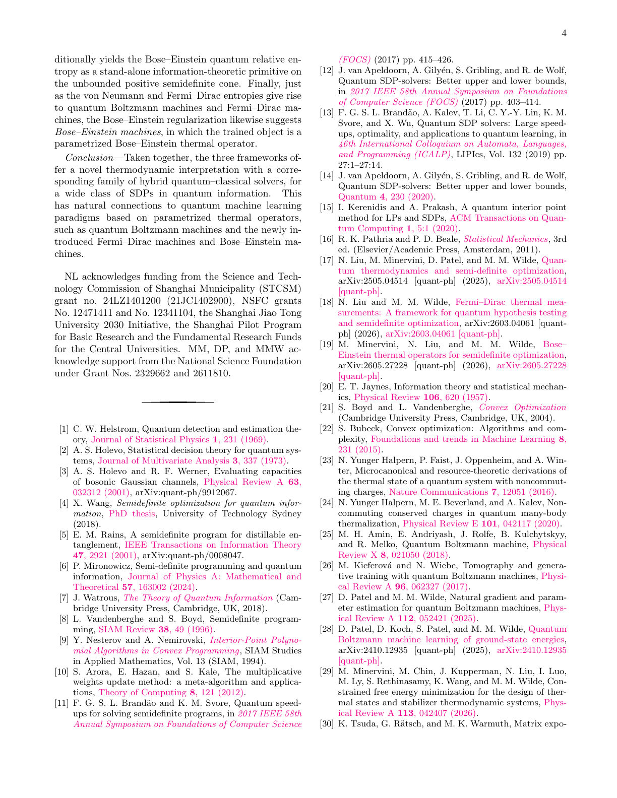
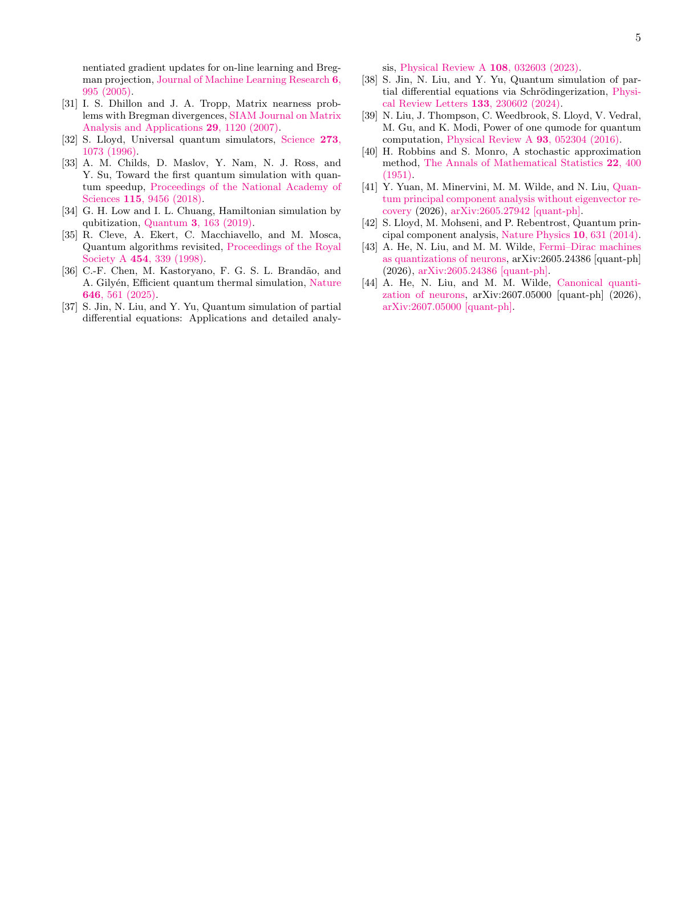
Summary. This work unifies the mathematical structure of quantum information problems (SDPs) by interpreting them through the lens of quantum thermodynamics. It demonstrates that Boltzmann, Fermi-Dirac, and Bose-Einstein statistics each provide a natural, solvable regularization for different types of quantum constraints. This yields hybrid quantum-classical algorithms for solving complex quantum optimization problems.
Why it may be interesting. It provides a powerful, unifying mathematical tool that connects the abstract optimization problems of quantum information theory directly to fundamental concepts of statistical mechanics (thermal expectation values, chemical potentials).
Main problem. The paper aims to develop a unified thermodynamic framework to interpret various Semidefinite Programs (SDPs) that arise in quantum information theory.
Main result. It shows that three distinct statistical ensembles—Boltzmann, Fermi-Dirac, and Bose-Einstein—each provide a natural thermodynamic regularization for different types of SDP constraints, leading to a common mathematical structure.
Method. The approach involves using free-energy regularization and Lagrangian duality to transform constrained SDPs into unconstrained, concave dual optimization problems parameterized by chemical potentials.
Model / system. The analysis covers quantum systems governed by three statistical frameworks: Boltzmann (for state variables), Fermi-Dirac (for measurement operators), and Bose-Einstein (for general PSD operators). The optimization is governed by a grand canonical Hamiltonian.
Key observables. The dual gradient and Hessian are shown to be closed-form as thermal expectation values, which are the key quantities for algorithm implementation.
Important parameters / regimes. Temperature (T) acts as a continuous control parameter, allowing the method to smoothly approximate the original, hard-constrained SDPs.
Assumptions / limitations. The method assumes the system can be treated at a finite temperature T>0 to obtain a smooth approximation of the original SDP. For the BE case, it assumes the Hamiltonian is gapped.
Figures summary. Table I summarizes the three frameworks, detailing the feasible set, entropy, relative entropy, and the form of the primal optimum for Boltzmann, FD, and BE statistics.
Paper structure. The paper first establishes the general thermodynamic regularization for SDPs, then details the specific mathematical and algorithmic implementations for the Boltzmann, Fermi-Dirac, and Bose-Einstein cases, culminating in a discussion of hybrid quantum-classical solvers.
Here we argue how quantum thermodynamics offers a unifying interpretation for a wide class of semidefinite programs (SDPs) that arise in quantum information. Three SDP variable constraints, namely trace-one density operators, operator-bounded measurements, and the unbounded positive semidefinite cone, admit thermodynamic regularizations associated with Boltzmann, Fermi-Dirac, and Bose-Einstein statistics, respectively. In each case the entropy-regularized dual is unconstrained and concave in a chemical-potential vector, and the primal optimum is a thermal operator of the matched statistics. The dual gradient and Hessian are thermal expectation values, enabling hybrid quantum-classical algorithms for solving a wide variety of SDPs.
Authors: Ziyu Liu, Tianning Xiao, Zhijie Fan, Youjin Deng
Type: both · Category: statistical mechanics · PDF: https://arxiv.org/pdf/2608.20750v1
Analysis basis: full PDF text, analyzed in chunks
Topic relevance: analog quantum simulation 2/5 · non-equilibrium universality 2/5
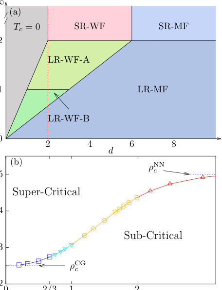
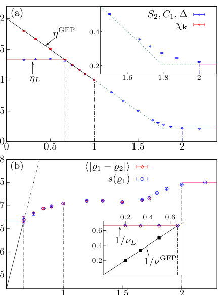
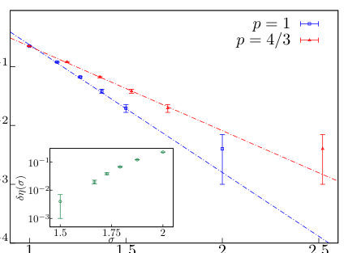
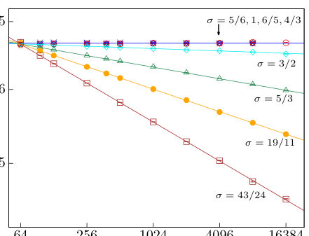
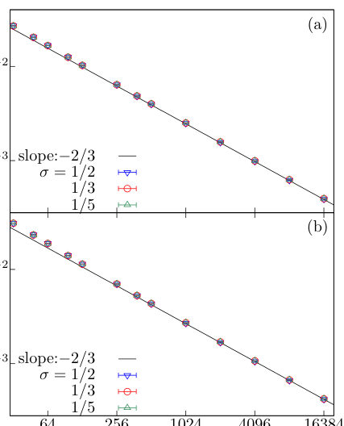
Summary. This paper performs extensive Monte Carlo simulations to map out the critical behavior of 2D bond percolation with long-range, algebraically decaying interactions. It identifies three distinct universality regimes based on the decay exponent $\sigma$. The work is significant for clarifying how critical properties transition between different scaling behaviors, such as Gaussian Fixed Point and Complete Graph asymptotics, in long-range statistical systems.
Why it may be interesting. While focused on classical percolation, the study of critical exponents and universality classes in long-range interacting systems provides crucial benchmarks for understanding critical phenomena in many-body quantum systems where interactions decay slowly.
Main problem. The paper investigates the critical exponents and universality diagram for two-dimensional bond percolation when the interaction decay is algebraic, $p(r) \propto 1/r^{2+\sigma}$.
Main result. The study establishes three distinct universality regimes (LR-WF-A, LR-WF-B, LR-MF) and finds that global observables can exhibit coexistence between Complete-Graph asymptotics and Long-Range Gaussian-Fixed-Point scaling.
Method. The research employs comprehensive Monte Carlo simulations using the event-based ensemble method, supplemented by conventional ensemble simulations and finite-size scaling analysis.
Model / system. The model is two-dimensional bond percolation on a lattice where the connection probability decays algebraically with distance $r$ according to $p(r) \propto 1/r^{2+\sigma}$.
Key observables. Critical exponents, specifically the anomalous dimension ($\eta$) and the correlation-length exponent ($ u(\sigma)$), are key observables.
Important parameters / regimes. The interaction decay exponent $\sigma$ is the primary tuning parameter, defining regimes such as $1 < \sigma \leq 2$ (LR-WF-A) and $0 < \sigma \leq 2/3$ (LR-MF).
Assumptions / limitations. The analysis assumes the validity of different scaling theories (Wilson-Fisher, Gaussian Fixed Point, Complete Graph) depending on the value of $\sigma$.
Figures summary. Figures are expected to show the universality class diagram in the $(d, \sigma)$ plane and plots comparing calculated critical exponents ($\eta$ vs $\sigma$) against theoretical predictions.
Paper structure. The paper systematically analyzes the critical behavior across different $\sigma$ regimes, presenting quantitative results in tables detailing fits for various susceptibilities ($\Delta, S_2, \chi_k$) across different $\sigma$ values.
We present a comprehensive Monte Carlo study of two-dimensional bond percolation with algebraically decaying connection probabilities $p(r)\propto 1/r^{2+σ}$, establishing the universality diagram in the long-range (LR) regime for $σ\le2$. Using the event-based ensemble method, we simulate systems with linear sizes up to $L=16384$ and investigate three universality regimes: LR Wilson--Fisher (WF) A ($1<σ\le2$), LR Wilson--Fisher B ($2/3<σ\le1$), and LR mean-field (MF) ($0<σ\le2/3$). In the LR-WF-B regime, the anomalous dimension is consistent with $η=2-σ$, in agreement with mathematical results for $2/3<σ<1$, while the correlation-length exponent $ν(σ)$ exhibits nontrivial, non-Gaussian variation. In the LR-WF-A regime, although $η$ remains close to $2-σ$ for smaller $σ$, statistically resolvable deviations $δη(σ)=η-(2-σ)>0$ start to appear near $σ\simeq3/2$ and grow toward the short-range crossover at $σ=2$. Finally, by complementing the event-based simulations with conventional ensemble simulations, we reveal the coexistence of complete-graph asymptotics and LR Gaussian-fixed-point scaling in the LR-MF regime. These results further clarify the critical properties in long-range percolation and provide crucial benchmarks for long-range statistical systems.
Authors: Zhengwei Liu, Zishuo Zhao
Type: theory · Category: other · PDF: https://arxiv.org/pdf/2608.21109v1
Analysis basis: full PDF text, analyzed in chunks
Topic relevance: analog quantum simulation 2/5 · quantum measurements 1/5
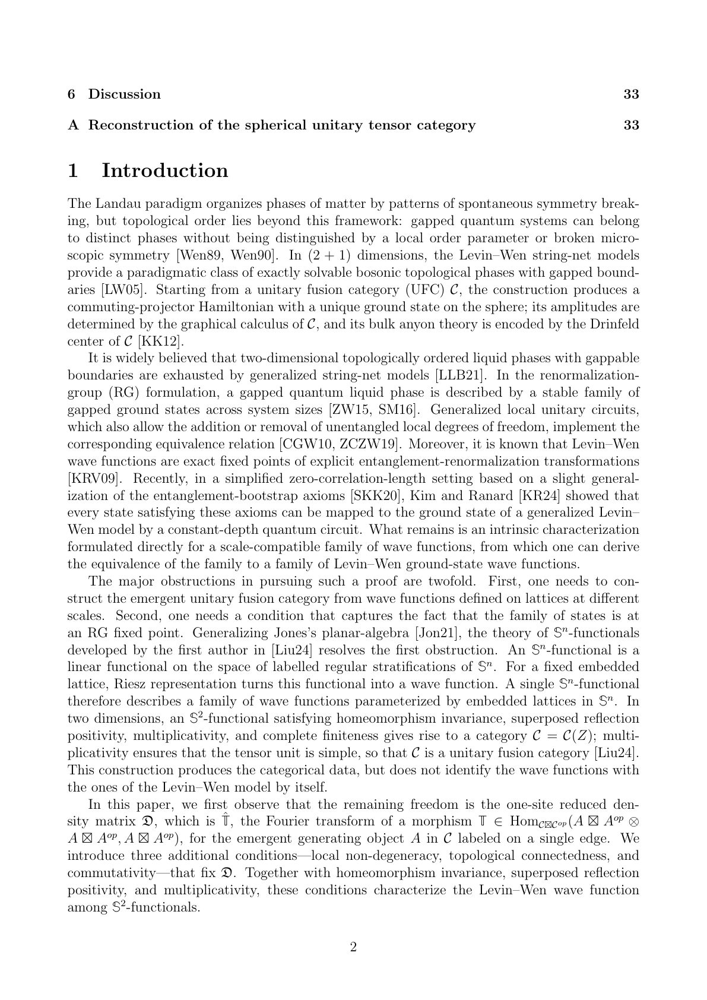
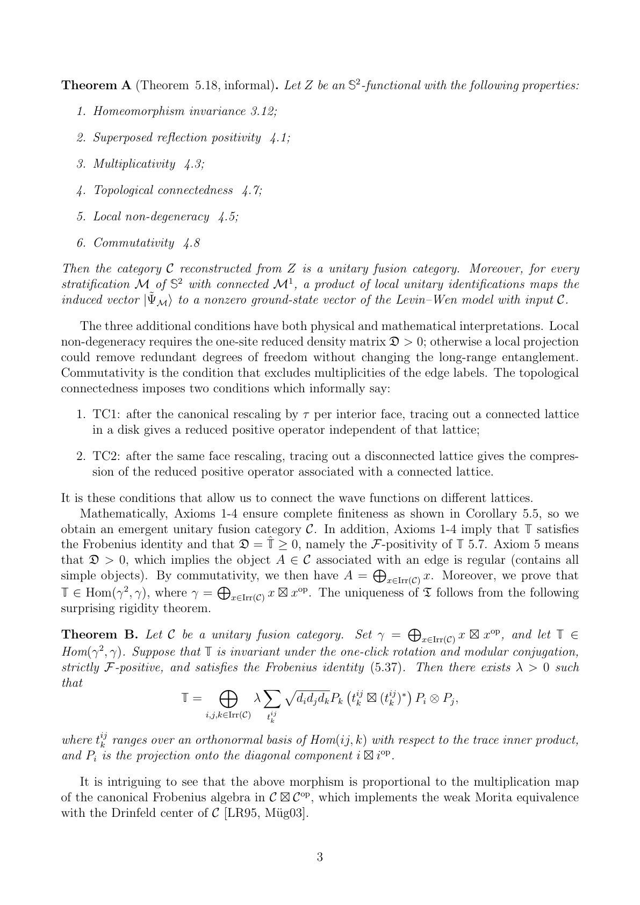
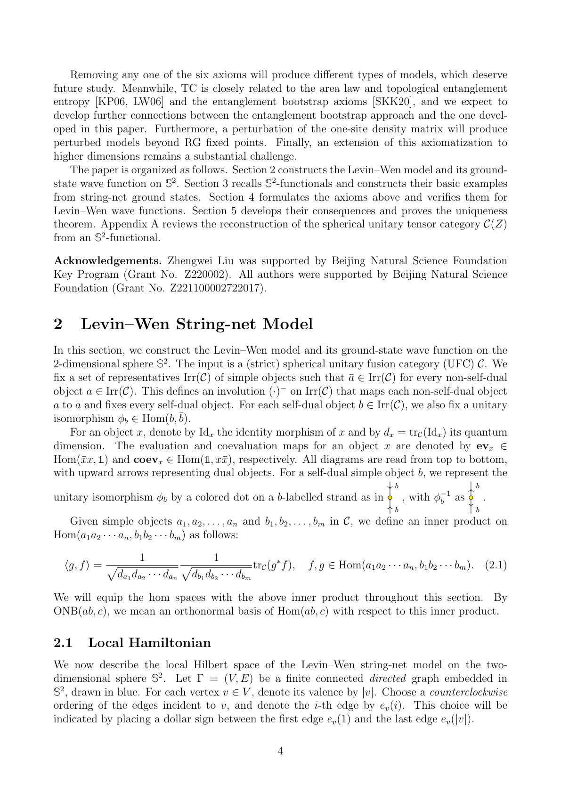
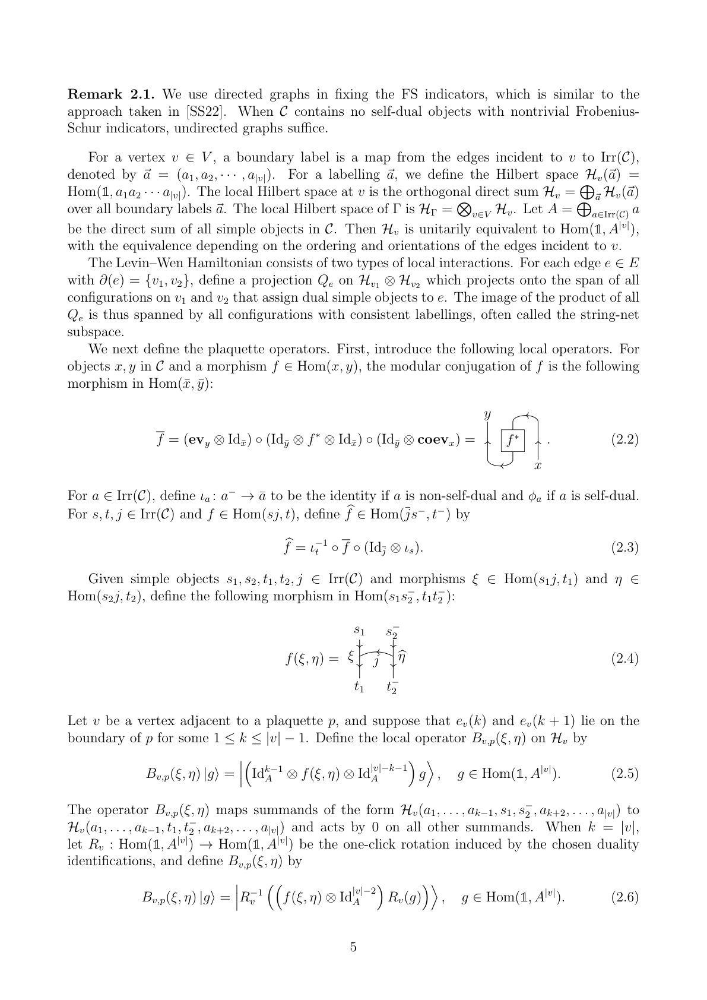
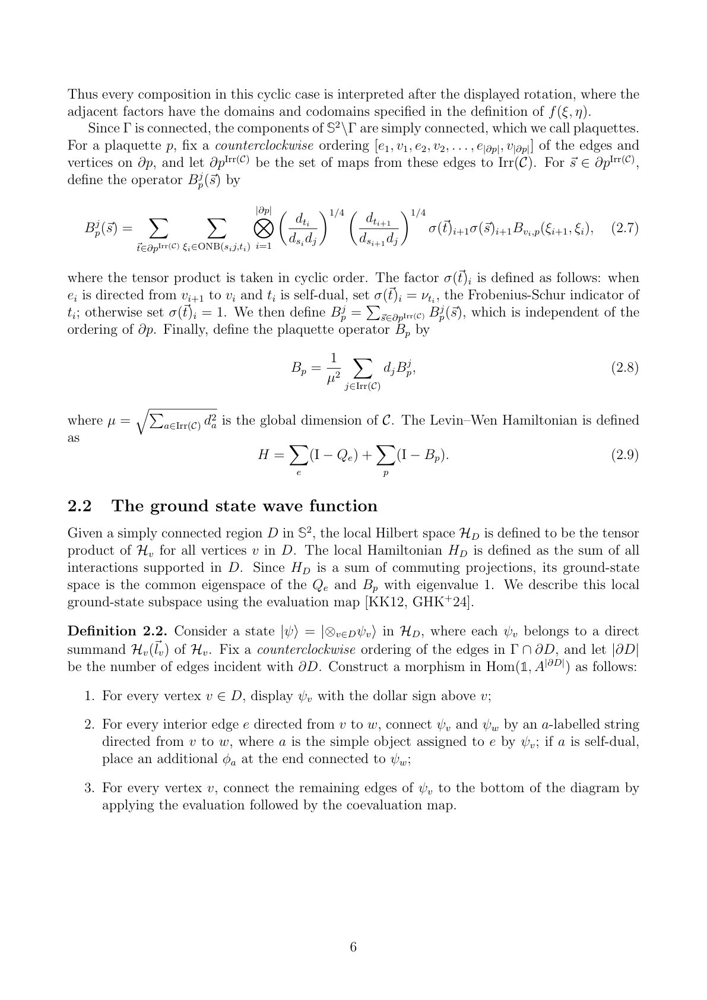
Summary. This paper introduces a set of six mathematical axioms designed to characterize the ground-state wave functions of the Levin--Wen model intrinsically. By imposing these axioms on multi-scale wave functions, the authors successfully reconstruct the underlying unitary fusion category and prove that the resulting state is a valid topological ground state. This offers a powerful, axiomatic framework for understanding topological order beyond Hamiltonian assumptions.
Why it may be interesting. This work provides a powerful, purely axiomatic characterization of topological order states, linking abstract mathematical structures (fusion categories) directly to physical ground states in a way that is highly relevant to understanding entanglement and topological phases in quantum systems.
Main problem. The central problem is to characterize the ground-state wave functions of the Levin--Wen model intrinsically, without relying on prior knowledge of the underlying Hamiltonian or categorical symmetry data.
Main result. The authors propose six axioms on multi-scale wave functions that are sufficient to uniquely reconstruct the underlying unitary fusion category and prove the resulting state is a non-zero Levin--Wen ground state.
Method. The approach involves developing and applying a set of axioms to a family of wave functions, utilizing specialized mathematical tools like $S_n$-functionals and analyzing the structure of $C^*$-tensor categories.
Model / system. The study focuses on the Levin--Wen model, which realizes topological order associated with a unitary fusion category on a lattice embedded in the 2D sphere. The ground state is defined by the common eigenspace of local edge and plaquette projection operators.
Key observables. The $S_2$-functional, the one-site reduced density matrix $D$, and the emergent unitary fusion category $C$.
Important parameters / regimes. Topological parameters $ au$ and $\mu$, and the scale factor $\lambda$ measuring the discrepancy between prescribed and reconstructed inner products.
Assumptions / limitations. The analysis assumes the existence of a multi-scale wave function satisfying the proposed axioms, and later work suggests generalizing the exchange relation to higher dimensions.
Paper structure. The paper progresses from defining the Levin--Wen model and its Hamiltonian structure to introducing the $S_2$-functionals. It then systematically develops and verifies the six axioms, culminating in theorems that establish the equivalence between satisfying these axioms and possessing a valid ground state.
The Levin--Wen model provides a lattice realization of topological orders associated with a given unitary fusion category. A longstanding open problem is to characterize Levin--Wen ground-state wave functions intrinsically, without assuming a priori categorical symmetry data or a Hamiltonian. We address this by proposing six axioms on a family of wave functions defined on lattices at multiple scales. These axioms allow us to reconstruct the underlying unitary fusion category and prove that the resulting wave functions map to nonzero Levin--Wen ground-state vectors of the emergent category.
Authors: Rahul V, Ranjan Modak, Shaon Sahoo, S Aravinda
Type: theory · Category: statistical mechanics · PDF: https://arxiv.org/pdf/2608.21151v1
Analysis basis: full PDF text, analyzed in chunks
Topic relevance: analog quantum simulation 2/5 · scars & prethermalization 1/5
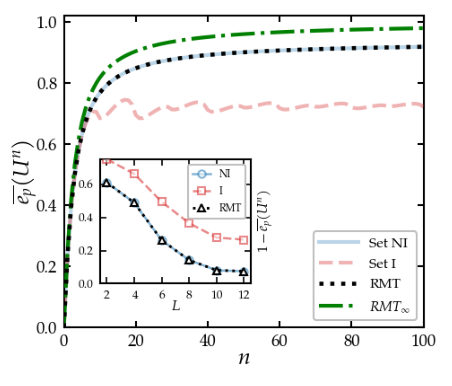
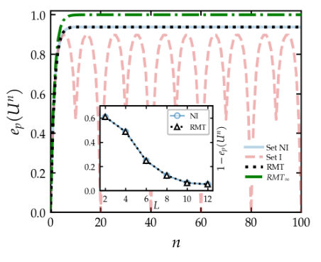
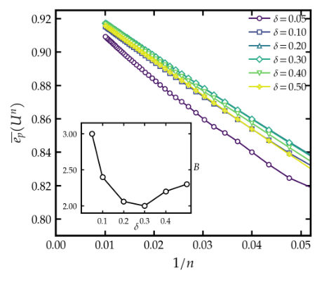
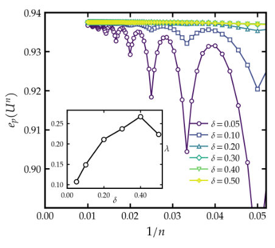
Summary. This paper develops a framework using entangling power to diagnose quantum dynamics, establishing a hierarchy where mixing implies ergodicity, but not the reverse. By applying this to the kicked Ising chain, the authors successfully distinguish between ergodic (but nonmixing) and mixing systems, providing a powerful tool for classifying quantum chaotic behavior.
Why it may be interesting. This work provides a novel, information-theoretic diagnostic tool (entangling power) to distinguish between different dynamical regimes (ergodic vs. mixing) in quantum many-body systems, offering insights beyond traditional spectral or correlation function analyses.
Main problem. The paper aims to characterize the underlying dynamics of quantum evolution by studying the signatures imprinted on the time-dependent entangling power, specifically distinguishing between ergodicity and mixing.
Main result. The authors establish that mixing implies ergodicity, but not vice versa; they show that nonintegrable many-body systems can exhibit mixing while integrable ones remain ergodic but nonmixing.
Method. The analysis uses the entangling power, defined via linear entropy, to quantify entanglement generation over time. They introduce a Lyapunov-like exponent to characterize the rate of approach to saturation.
Model / system. The study applies to general unitary operators, specifically analyzing two-qubit gates and the kicked Ising chain in both integrable and nonintegrable regimes.
Key observables. Entangling Power ($ ext{ep}(U)$), Long-time-averaged entangling power ($ ext{epsat}(U)$), Lyapunov-like exponent, and the Haar-averaged linear entropy.
Important parameters / regimes. Degree of integrability breaking ($\delta$), time steps ($n$), and the system size (for the Ising chain).
Assumptions / limitations. The characterization relies on the definitions of ergodicity (average equals Haar average) and mixing (time-dependent power converges to Haar average).
Figures summary. Figures likely show the time evolution of entangling power for different parameters ($\delta$) and the systematic increase of the decay rate ($\lambda$) with the degree of integrability breaking.
Paper structure. The paper first defines the diagnostic tools (entangling power, ergodicity, mixing) and then applies them sequentially to two-qubit gates and the kicked Ising chain, culminating in the establishment of the ergodic hierarchy and the Lyapunov exponent analysis.
We study quantum dynamics through the lens of entanglement generation and characterize the underlying unitary evolution by the distinct signatures it imprints on the time-dependent entangling power. For a unitary operator, we characterize ergodicity by the equality between its long-time-averaged entangling power and the Haar-averaged linear entropy. We define mixing more stringently as the convergence of the time-dependent entangling power itself to the Haar value at long times. Within this framework, we establish the ergodic hierarchy of dynamical behavior, showing in particular that mixing implies ergodicity, whereas ergodicity does not necessarily imply mixing. As an application, we find that two-qubit unitary gates are neither ergodic nor mixing: their long-time-averaged entangling power can take only four discrete values, none of which coincides with the Haar average. We then investigate many-body dynamics using the kicked Ising chain and find that the long-time-averaged entangling power converges to the Haar value in both integrable and nonintegrable cases, indicating ergodicity. Remarkably, however, the nonintegrable chain exhibits mixing, whereas the integrable chain, despite being ergodic, is demonstrably nonmixing. We also introduce a Lyapunov-like exponent to characterize the rate at which the time-dependent entangling power approaches its saturation value. We find that this exponent increases systematically with the degree of integrability breaking in the many-body system. Our results establish entanglement generation as a useful framework for characterizing dynamical systems and reveal qualitatively different signatures of integrability beyond conventional diagnostics.
Authors: Meng Cheng
Type: theory · Category: strongly correlated electrons · PDF: https://arxiv.org/pdf/2608.20604v1
Analysis basis: full PDF text, analyzed in chunks
Topic relevance: Keldysh / 2PI / non-Gaussian methods 2/5 · analog quantum simulation 1/5
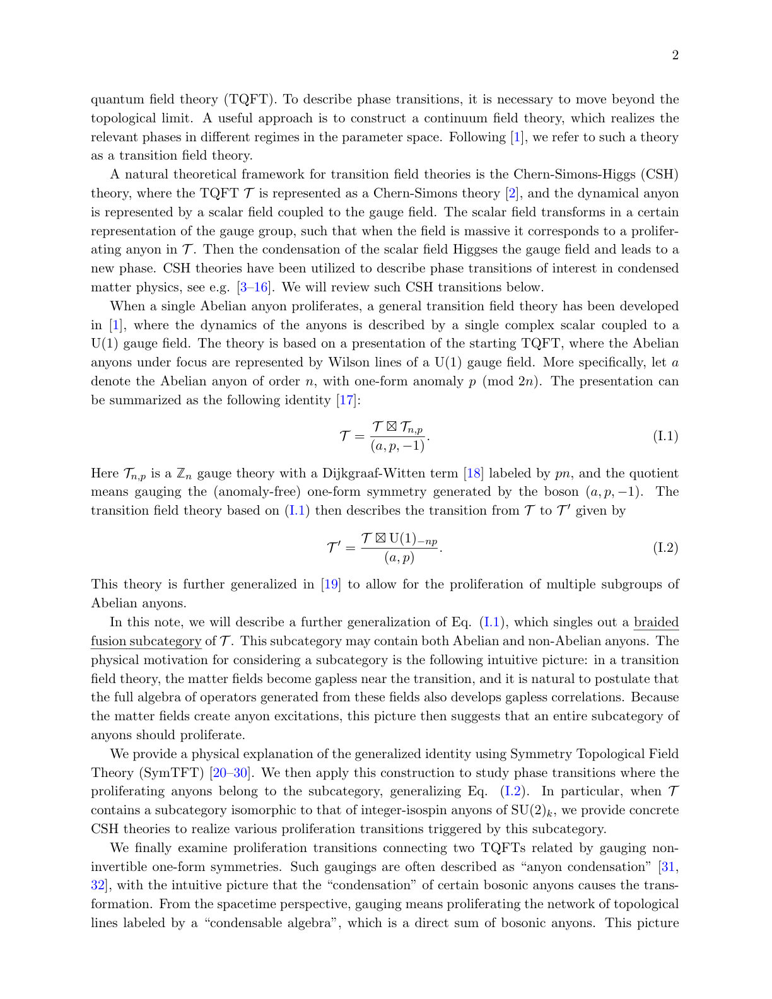
Summary. This work develops a general theoretical framework to describe phase transitions in topological phases driven by the proliferation of non-Abelian anyons. It utilizes Symmetry Topological Field Theory (SymTFT) to model these transitions, showing they can be explicitly realized by Chern-Simons-Higgs theories. This provides a powerful mathematical tool for classifying and understanding exotic quantum phases in condensed matter systems.
Why it may be interesting. The deep connection between topological order, symmetry protection, and effective field theories (like CSH) provides powerful mathematical tools applicable to understanding emergent phenomena in strongly correlated electron systems.
Main problem. The paper studies phase transitions occurring when non-Abelian anyons proliferate within a $(2+1)$d topological phase.
Main result. It establishes a general theoretical framework using Symmetry Topological Field Theory (SymTFT) and demonstrates that these transitions can be realized by Chern-Simons-Higgs (CSH) field theories.
Method. The analysis employs advanced field theory techniques, including SymTFT, the study of braided fusion subcategories, and the analysis of Higgs mechanisms in gauge theories.
Model / system. The system involves a Topological Quantum Field Theory (TQFT) coupled to dynamical matter associated with non-Abelian anyons. Specific models analyzed include CSH theories and the gauging of non-invertible one-form symmetries.
Key observables. The type of anyons that proliferate, the resulting low-energy effective TQFT, and the structure of the Higgs potential.
Important parameters / regimes. The structure of the braided fusion subcategory ($B$), the coupling constants in the CSH Lagrangian (e.g., $r, \lambda, \kappa$), and the symmetry group $G$.
Assumptions / limitations. The framework relies on the SymTFT interpretation, and some mathematical identities are established for specific cases rather than being fully general.
Paper structure. The paper progresses from defining the general framework for anyon proliferation transitions using SymTFT, to analyzing specific realizations via CSH theories, and concluding with detailed examples involving the gauging of non-invertible symmetries.
We study phase transitions out of a (2+1)d topological phase driven by the proliferation of anyons in a braided fusion subcategory. We describe a general theoretical framework for such transitions, in which the topological quantum field theory (TQFT) is coupled to dynamical matter associated with anyons in the subcategory. We interpret this construction using symmetry topological field theory (SymTFT), where the dynamics is localized on the symmetry boundary of the (3+1)d slab. We analyze several examples, and present explicit Chern-Simons-Higgs (CSH) field theories realizing the proliferation transitions. We also examine proliferation transitions that implement gauging of non-invertible one-form symmetry in the parent TQFT. This includes a general construction for ${\rm Rep}(G)$ one-form symmetry for a finite group $G$, and a CSH realization of the non-invertible one-form gauging ${\rm SU}(2)_{10}\rightarrow {\rm Spin}(5)_1$. We discuss which anyons proliferate at these transitions.
Authors: Yue Zhang
Type: theory · Category: other · PDF: https://arxiv.org/pdf/2608.21217v1
Analysis basis: full PDF text, analyzed in chunks
Topic relevance: quantum measurements 2/5 · analog quantum simulation 1/5
Summary. This paper develops a method to probe the nonclassical features of superpositions of Gaussian states using the Tsirelson probability. By calculating this probability for circular and generalized circular states, the authors demonstrate clear violations of classical bounds. The findings establish these superpositions as versatile platforms for testing quantum nonclassicality witnesses.
Why it may be interesting. This work provides a concrete, measurable diagnostic tool (the Tsirelson probability) to test nonclassicality in simple, yet physically relevant, bosonic systems, which is highly relevant to quantum optics and open quantum systems.
Main problem. The paper aims to quantify the nonclassical nature, or 'quantumness,' of superpositions of Gaussian states using the Tsirelson probability.
Main result. The authors analytically calculate the Tsirelson probability for circular and generalized circular states, demonstrating violations of established classical bounds for specific parameters.
Method. The calculation involves deriving the Tsirelson probability, which is defined as an average probability over measurements of a precessing quadrature at $d$ equally spaced times.
Model / system. The system under study consists of bosonic states, specifically superpositions of Gaussian states, including coherent and squeezed states, analyzed in the context of harmonic oscillators.
Key observables. Tsirelson probability ($ ext{Prob}_d( ho)$), Wigner negativity, and sub-Planck phase-space structures.
Important parameters / regimes. The number of measurement times, $d$, and squeezing parameters ($r$) are key variables used to map the nonclassicality.
Assumptions / limitations. The analysis often relies on assuming rotational invariance of the state ($ ext{R}\varphi ho ext{R}^\dagger\varphi = ho$) to simplify the probability calculation.
Figures summary. Figures plot the calculated Tsirelson probability for both circular and generalized states against the classical bounds for $d=3, 5, 7$, showing clear violations.
Paper structure. The paper introduces the concept of quantumness via the Tsirelson probability, derives the calculation for rotationally invariant states, and then applies this framework to compute and analyze the results for both simple circular and more complex generalized circular states.
Superpositions of Gaussian states, including circular states and generalized circular states, exhibit a rich variety of nonclassical features such as Wigner negativity and sub-Planck phase-space structures. The Tsirelson probability, central to the Tsirelson precession protocol, is defined as the average probability that a precessing quadrature yields a positive outcome when measured at equally spaced times, with the classical bound given by $1/2 \pm 1/(2d).$ In this work, we compute this probability for superpositions of Gaussian states. For circular states (superpositions of $d$ coherent states), we analytically calculate their Tsirelson probability and find violations of the classical bounds for $d=3,5,7$. For generalized circular states, which incorporate squeezing, we derive a general expression and identify parameter regimes that enhance the violation. Our results provide a comprehensive map of the dynamical nonclassicality of superpositions of Gaussian states and establish them as versatile platforms for testing nonclassicality witnesses.
Authors: Dongwook Kim, Karsten Held
Type: theory · Category: strongly correlated electrons · PDF: https://arxiv.org/pdf/2608.21284v1
Analysis basis: full PDF text, analyzed in chunks
Topic relevance: Keldysh / 2PI / non-Gaussian methods 2/5 · analog quantum simulation 1/5
Summary. This work theoretically explains the mid-infrared optical conductivity in cuprate superconductors by proposing that it originates from two distinct electronic gaps: the pseudogap from spin fluctuations and the Mott-Hubbard gap. Using the Hubbard model and DΓA calculations, the authors show that the characteristic spectral features can be uniquely attributed to each gap, providing a unified microscopic picture.
Why it may be interesting. The clear separation and microscopic understanding of spectral features arising from different correlation mechanisms (spin fluctuations vs. local correlations) provide a powerful theoretical tool for interpreting complex spectroscopic data in strongly correlated materials.
Main problem. The study aims to elucidate the origin and doping-dependence of the characteristic mid-infrared (MIR) optical conductivity peaks observed in cuprate superconductors.
Main result. The MIR optical conductivity arises from two distinct, yet intertwined, gaps: one from the pseudogap (PG) mediated by spin fluctuations, and another from the Mott-Hubbard gap structure (LHB-QPB waterfall).
Method. The analysis employs the ladder dynamical vertex approximation (DΓA) applied to the Hubbard model, supplemented by semi-analytical modeling of the self-energy pole structure.
Model / system. The system is the Hubbard model on a square lattice, relevant to cuprate superconductors, with parameters set to model the $d_{x^2-y^2}$ orbital. The calculations use the Kubo formalism for optical conductivity.
Key observables. Mid-infrared (MIR) optical conductivity ($\sigma(\omega)$), the nodal spectral function $A(\mathbf{k}, u)$, and the difference $\sigma(\omega) - \sigma_{ ext{Drude}}(\omega)$.
Important parameters / regimes. Doping level ($\delta$), Hubbard interaction ($U$), and the relative contributions from the PG and Mott-Hubbard gaps.
Assumptions / limitations. The analysis relies on the DΓA approximation, and the PG gap structure is modeled as anisotropic s-wave, with its nodal gap being above the Fermi energy.
Figures summary. Figures illustrate the evolution of the nodal spectral function and optical conductivity ($\sigma(\omega)$) across different doping levels, distinguishing the contributions from the PG structure and the LHB-QPB waterfall.
Paper structure. The paper systematically analyzes the MIR optical conductivity by identifying and modeling two distinct gap contributions—the PG and the Mott-Hubbard gap—and demonstrating how their characteristic shapes and doping dependencies can be separately reproduced by the theoretical framework.
Mid-infrared (MIR) optical conductivities in cuprate superconductors show universal features. In this study, we demonstrate that these originate from two distinct gaps: the pseudogap mediated by antiferromagnetic spin fluctuations and the Mott-Hubbard gap. The MIR spectra from these two gaps show a characteristic and distinct shape and doping dependence, and can thus be distinguished. Specifically, the Mott-Hubbard correlations, while rendering a peak in the visible spectrum for small dopings, yield a broad optical response starting in the MIR when a ``waterfall'' develops in the one-particle spectrum at larger dopings. The numerically and analytically determined doping-dependence of both gaps consistently reproduce experiments, and provide a unified microscopic understanding of the cuprate MIR optical conductivity.
Authors: Hui-Juan Zuo, Ying-Ying Lu, Shao-Ming Fei
Type: theory · Category: other · PDF: https://arxiv.org/pdf/2608.20741v1
Analysis basis: full PDF text, analyzed in chunks
Topic relevance: quantum measurements 2/5
Summary. This paper theoretically analyzes how genuine nonlocality can be activated in tripartite quantum systems using sets of orthogonal product states. The authors establish precise conditions and provide explicit constructions for these states, demonstrating the activation of both Type-I and Type-II genuine nonlocality. This advances the understanding of quantum correlations by linking local distinguishability to genuine nonlocality.
Why it may be interesting. This work provides rigorous mathematical tools to characterize and generate genuine nonlocality in multipartite systems using product states, which is fundamental for understanding quantum correlations beyond simple entanglement measures.
Main problem. The paper investigates the conditions under which genuine nonlocality can be activated from a set of quantum states that are initially distinguishable in a tripartite system.
Main result. The authors provide explicit constructions for orthogonal product state sets in tripartite systems that exhibit both Type-I and Type-II genuine nonlocality after applying specific local measurements.
Method. The analysis relies on defining genuine nonlocality based on local indistinguishability across all bipartitions, and uses local measurements (OPLMs) to transform distinguishable sets into genuinely nonlocal ones.
Model / system. The system under study is a tripartite quantum system described by orthogonal product states in the Hilbert space $\text{C}^{d_1} \otimes \text{C}^{d_2} \otimes \text{C}^{d_3}$.
Key observables. Genuine nonlocality (Type I and Type II), local distinguishability, and the existence of orthogonality-preserving local measurements.
Important parameters / regimes. The dimensions of the subsystems ($d_1, d_2, d_3$) and the structure of the product states are critical parameters.
Assumptions / limitations. The analysis assumes the existence of specific local measurements ($K_A, K_C$) capable of activating the nonlocality, and the proofs often rely on specific dimension constraints (e.g., $d_i$ being odd).
Figures summary. The notes reference figures showing distinction details for different parity cases of the dimensions ($d_i$ odd vs. $d_i$ even) in the tripartite system.
Paper structure. The paper builds conceptually by defining genuine nonlocality types, establishing necessary conditions for local indistinguishability (Lemma 1), and then constructing specific sets of states (Propositions 1 & 2) that demonstrate the activation of both Type-I and Type-II genuine nonlocality through local measurements.
A set of orthogonal quantum states in multipartite systems is of genuine nonlocality if it is locally indistinguishable in every bipartition. If it is locally reducible when the parties are separated, we say that it has genuine nonlocality of type~\uppercase\expandafter{\romannumeral 1}; otherwise, it has genuine nonlocality of type~\uppercase\expandafter{\romannumeral 2}. For a locally distinguishable set without local redundancy, if there exist some orthogonality preserving local measurements such that each outcome leads to a locally indistinguishable set, then we say that it exhibits the activation of nonlocality. We activate type-\uppercase\expandafter{\romannumeral 1} and type-\uppercase\expandafter{\romannumeral 2} genuine nonlocality of orthogonal product state sets in tripartite systems. In particular, we tackle the local irredundancy problem with partial trace operation and $p$-ary numeral systems to significantly simplify the proofs. Our results also address the open question raised by S. Bandyopadhyay \textit{et al.}[\href{https://link.aps.org/doi/10.1103/PhysRevA.104.L050201}{Phys. Rev. A \textbf{104}, L050201 (2021)}]. Furthermore, we observe the activation of hidden genuine nonlocality in multipartite systems, which highlights the applications of nonlocality based on state discrimination in different practical scenarios.
Authors: Jamil Khalouf-Rivera, Miguel Carvajal, Francisco Pérez-Bernal
Type: theory · Category: statistical mechanics · PDF: https://arxiv.org/pdf/2608.21010v1
Analysis basis: full PDF text, analyzed in chunks
Topic relevance: analog quantum simulation 2/5
Summary. This theoretical paper examines the degeneracy patterns in the LMG model, proving that energy doublets can remain degenerate even when parity symmetry is broken. This unexpected robustness is linked to a deeper, anti-unitary $\mathbb{Z}_2$ reflection symmetry present in the system's classical limit phase space. The study uses quantum phase transition diagnostics to map out this symmetry-protected degeneracy.
Why it may be interesting. This work provides a detailed theoretical study of symmetry protection in quantum many-body models, showing that degeneracy can be protected by symmetries weaker than simple parity conservation, which is highly relevant for understanding quantum phase transitions in interacting systems.
Main problem. The paper investigates how doubly-degenerate states can persist in the Lipkin-Meshkov-Glick (LMG) model even when the system's parity symmetry is explicitly broken by an external term.
Main result. The authors demonstrate that breaking parity symmetry via a $\delta$-term does not destroy the exponential degeneracy of energy doublets, attributing this robustness to an underlying anti-unitary $\mathbb{Z}_2$ reflection symmetry.
Method. The analysis employs the coherent-state formalism to study Ground-State and Excited-State Quantum Phase Transitions (GSQPTs/ESQPTs) in the mean-field limit.
Model / system. The system is modeled by an anharmonic LMG Hamiltonian, which is modified by adding a parity-breaking interaction term $\hat{V}_{ ext{int}}$. The model is analyzed across varying control parameters $\xi$, $\alpha$, and $\delta$.
Key observables. Energy gap, expectation value of GSQPT order parameter, Quantum Fidelity Susceptibility, and the existence of pair-degenerate states.
Important parameters / regimes. Control parameters include $\xi$ (driving the spectrum), $\alpha$ (anharmonicity), and $\delta$ (parity-breaking strength).
Assumptions / limitations. The analysis relies on the $\mathbb{Z}_2$ symmetry being anti-linear, which prevents the Hamiltonian from being block-diagonalized.
Figures summary. Figures illustrate the correlation energy diagram versus the parity-breaking parameter $\delta$, showing features associated with first-order GSQPTs for different anharmonicity regimes ($\alpha=0$ vs. $\alpha=-0.6$).
Paper structure. The paper introduces the anharmonic LMG Hamiltonian, analyzes its phase transitions using mean-field theory, and then systematically studies the effect of adding a parity-breaking term $\hat{V}_{ ext{int}}$ while tracking the conservation of degeneracy via the underlying $\mathbb{Z}_2$ symmetry.
Degeneracy patterns in quantum mechanics stem from the system symmetries. In particular, the broken-symmetry phase in the well-known Lipkin-Meshkov-Glick (LMG) model is composed of doubly-degenerate states of different parity. In this work, we show that such doublets can exist even if parity is not conserved. For this purpose, our starting point is an anharmonic LMG Hamiltonian with a second-order ground-state quantum phase transition (GSQPT) and a rich spectrum, with two different excited-state quantum phase transitions. The inclusion in the Hamiltonian of a term inducing a first-order GSQPT breaks the parity symmetry but conserving the exponential degeneracy in the energy doublets. We demonstrate that this phenomenon can be traced back to the existence of a $\mathbb{Z}_2$ symmetry (reflection symmetry) in the system's classical limit phase space that leads to an anti-unitary $\mathbb{Z}_2$ symmetry in the quantum system.
Authors: Kaniuar Bacho, Alexandru Cojocaru
Type: theory · Category: quantum information and computing · PDF: https://arxiv.org/pdf/2608.21241v1
Analysis basis: full PDF text, analyzed in chunks
Topic relevance: quantum measurements 2/5
Summary. This paper introduces Eavesdropper-Blind Remote State Preparation (EB-RSP), a weaker but sufficient primitive for quantum cryptography. By constructing EB-RSP using algebraic structures like one-way group actions, the authors provide a method to build quantum public-key encryption that avoids reliance on strong trapdoor functions. This advances the theoretical understanding of quantum cryptographic primitives.
Why it may be interesting. While focused on cryptography, the underlying principles of secure state preparation and information leakage are fundamental to understanding quantum communication protocols, which is relevant to quantum networking and quantum computation security.
Main problem. The paper investigates weaker security notions for Remote State Preparation (RSP), specifically Eavesdropper-Blind RSP (EB-RSP), to reduce reliance on strong cryptographic assumptions like trapdoor functions.
Main result. It shows that two-message EB-RSP is sufficient to construct Quantum Public-Key Encryption (QPKE) with classical public keys and quantum ciphertexts, providing a path toward trapdoor-free quantum cryptography.
Method. The authors construct EB-RSP protocols using one-way group actions and demonstrate the security of the resulting QPKE scheme by reducing its security to the underlying EB-RSP assumption.
Model / system. The work operates in the quantum information processing framework, involving classical communication between a Verifier and a Prover, and utilizing quantum states (e.g., root of unity states) and group actions.
Key observables. The primary observables are the ability to correctly prepare a target quantum state $| heta angle$ and the security against an eavesdropper learning information about $ heta$ from the protocol transcript.
Important parameters / regimes. The security relies on the existence of a free One-Way Group Action (OWGA) and the structure of the state space, particularly when $N$ is prime or composite.
Assumptions / limitations. The core assumption is the existence of a free OWGA, which allows the construction to proceed without relying on trapdoor functions, though the security proof for QPKE requires only hiding the most significant bit of the secret key.
Figures summary. Not specified in the notes.
Paper structure. The paper first introduces the EB-RSP notion and shows its sufficiency for QPKE. It then constructs the EB-RSP from one-way group actions, providing a trapdoor-free approach. Finally, it details the construction and security proof of the resulting IND-CPA secure QPKE scheme.
Remote state preparation (RSP) is a central primitive in quantum cryptography, enabling classical parties to remotely construct quantum states using only classical communication. As a result, RSP serves as a key building block in numerous protocols involving classical clients and quantum servers, allowing classical parties to leverage the advantages offered by powerful quantum computers. All known constructions of RSP rely on strong cryptographic assumptions, typically variants of trapdoor claw-free functions (TCFs). In this work, we initiate the study of a weaker form of remote state preparation, which we call eavesdropper-blind remote state preparation (EB-RSP). Informally, EB-RSP requires blindness only against external observers who see the transcript of the honest protocol, rather than against the quantum server itself. Despite this relaxed adversarial model, the resulting notion remains sufficient for useful cryptographic applications. In particular, we show that two-message EB-RSP already suffices to construct quantum public-key encryption with classical public keys and quantum ciphertexts. We then construct two-message EB-RSP protocols from specific one-way group actions, yielding a first step toward RSP-type primitives based on assumptions that do not rely on trapdoors. Finally, we observe that existing RSP constructions are likely naturally adaptable to the two-message EB-RSP notion; we demonstrate this explicitly for a concrete TCF-based RSP construction.
Authors: Zohreh Davoudi, Jesse R. Stryker
Type: theory · Category: quantum information and computing · PDF: https://arxiv.org/pdf/2608.21258v1
Analysis basis: full PDF text, analyzed in chunks
Topic relevance: analog quantum simulation 2/5
Summary. This paper tackles the immense computational challenge of simulating Quantum Chromodynamics (QCD) on quantum computers using product-formula quantum algorithms. The authors introduce a novel, highly efficient method for decomposing the Hamiltonian, achieving an exponential cost reduction factor of $10^{14}$ compared to prior state-of-the-art estimates. This work is crucial for determining the feasibility of simulating fundamental particle physics models on near-term quantum hardware.
Why it may be interesting. While focused on QCD, the techniques developed for Hamiltonian decomposition and resource scaling are fundamental to simulating any complex, interacting quantum many-body system, which is relevant to AMO physics.
Main problem. Developing quantum algorithms capable of simulating the real-time dynamics of Quantum Chromodynamics (QCD) efficiently.
Main result. The authors demonstrate a method that reduces the T-gate cost estimate for QCD simulations using a second-order product formula by a factor of nearly $10^{14}$.
Method. The core method involves performing an efficient exponentiated-Hamiltonian decomposition, which significantly improves upon previous product-formula-based Trotterization techniques.
Model / system. The system is based on lattice gauge theories, specifically QCD with SU($N_c$) gauge groups, simulated via Hamiltonian evolution on a quantum computer.
Key observables. The primary focus is on the computational cost (T-gate count) required to simulate the time evolution operator $e^{-iT H}$.
Important parameters / regimes. The complexity scales with the number of colors ($N_c$) and the bosonic cutoff ($\Lambda$).
Assumptions / limitations. The analysis relies on the product-formula decomposition of the time evolution operator and assumes the feasibility of implementing the derived Hamiltonian decompositions.
Figures summary. Not specified.
Paper structure. The paper reviews the problem of QCD simulation, details the limitations of previous product-formula methods (like Kan and Nam's), and then introduces and analyzes the new, highly efficient exponentiated-Hamiltonian decomposition technique.
Quantum algorithms for simulating quantum chromodynamics (QCD) have matured steadily since the pioneering work of Byrnes and Yamamoto [PRA 73, 022328 (2006)]. The most popular strategies for Hamiltonian simulation involve product-formula decompositions. However, the application of product-formula methods to SU($N_c$) lattice gauge theories by Byrnes and Yamamoto leads to $O(Λ^{8(N_c^2-1)})$ gate complexity per Trotter step, where $Λ$ is the bosonic cutoff in the electric (i.e., irreducible-representation) basis. A seminal work by Kan and Nam [arXiv:2107.12769 (2021)] significantly improves over such an undesirable cost and reports an $O\big(Λ\text{polylog}(Λ)\big)$ scaling, yet it still calls for an unrealistically large number of quantum gates. Here, we illuminate one of the reasons behind this high cost estimate and show that a factor of size $O(2^{4(N_c^2-1)})$ can be removed from the per-Trotter-step cost estimate by Kan and Nam. We specifically show that, by using methods developed in our past works [PRD 112, 014508 (2025); Quantum 7, 1213 (2023)], exponentiated-Hamiltonian decomposition---a necessary step in the application of product-formula algorithms---can be performed far more efficiently than previously thought. Our method reduces the T-gate cost estimate of QCD simulations using a second-order product formula by a factor of nearly $10^{14}$, independent of simulation parameters and sizes. Focusing on simulations in the electric basis, we further contrast our results with other methods: the local-multiplet basis approach of Ciavarella, Klco, and Savage [PRD 103, 094501 (2021)] and the near-optimal algorithm of Rhodes, Kreshchuk, and Pathak [PRX Quantum 5, 040347 (2024)]. This work highlights the importance of continued algorithmic improvement to bringing the quantum-simulation cost of QCD within reach of realistic quantum computers.
Authors: Jian Yao, Quntao Zhuang
Type: theory · Category: quantum information and computing · PDF: https://arxiv.org/pdf/2608.21321v1
Analysis basis: full PDF text, analyzed in chunks
Topic relevance: quantum measurements 2/5
Summary. This work establishes the fundamental limits on distinguishing between two quantum ensembles by analyzing the joint sampled state via moment operators. It derives the minimum Bayes error and the asymptotic error exponent, showing that discrimination is governed by the full moment hierarchy. The results are particularly insightful for understanding $t$-designs and quantum communication protocols.
Why it may be interesting. The rigorous derivation of error bounds for distinguishing quantum ensembles, especially those related to $t$-designs, provides fundamental limits for quantum state characterization in quantum information processing.
Main problem. The paper derives fundamental limits for binary hypothesis testing between finite quantum ensembles, which are unordered collections of weighted quantum states.
Main result. The minimum Bayes error and the asymptotic error exponent are determined by the full moment hierarchy and the cross-hypothesis permutation bottleneck ($\xi_{ ext{acr}}$).
Method. The analysis uses moment operators, derives the Bayes-optimal measurement based on the trace norm of moment differences, and applies Chernoff bounds to find the asymptotic error exponent.
Model / system. The system under study is a quantum state ensemble $\mathcal{E} = \{(p_i, ho_i)\}_{i=1}^N$, which is distinct from classical-quantum states due to its label-invariant nature. Specific applications include $t$-designs and two-component ensembles.
Key observables. Minimum Bayes Error ($ ext{P}^{(M)}_{e, ext{opt}}$), Asymptotic Error Exponent ($E$), and the moment operators ($K^{(r)}$).
Important parameters / regimes. Number of samples ($M$), design parameter ($t$), and the overlap between component states ($c$).
Assumptions / limitations. The analysis assumes a label-invariant access model and relies on combining achievable bounds with fixed-permutation converse results.
Figures summary. Figures illustrate the exact Bayes error decay for testing between designs, showing an asymptotic decay scaling as $2^{-M/t^2}$, and plot universal upper bounds for qubit $t$-design ensembles.
Paper structure. The paper progresses by first defining the problem using moment operators, deriving the exact finite-sample error, establishing the asymptotic error exponent via Chernoff bounds, and applying these results to specific physical models like $t$-designs and two-component systems.
Quantum state ensembles are important in quantum information processing. For example, quantum $t$-designs model highly entangled states in complex systems, while projected ensembles appear in generative quantum machine learning and studies of thermalization. With their sample state accompanied by a classical label, these ensembles contain operational information beyond their average density operators. Yet an ensemble differs from a classical-quantum state because it is invariant under permutations of labels. We formulate binary hypothesis testing between finite quantum ensembles and derive fundamental limits on error probability. Given an observed label pattern, we show that the joint sampled state can be described by power-weighted ensemble moments. This yields the Bayes-optimal measurement and exact finite-sample error, revealing that discrimination is governed by the full moment hierarchy up to the number of samples. In the many-sample limit, we derive Chernoff bounds and obtain exact error exponents for finite uniform pure-state ensembles. We apply these results to optical communication and $t$-designs. For finite uniform pure-state $t$-designs with large $t$, the maximal discrimination exponent scales sharply as $\sim t^{-2}$, while equal-prior fixed-error testing requires $\sim t^2$ samples.
Authors: Nikiforos Paraskevopoulos, Sebastian de Bone, Mick Christophersen, Simon Storz, A. Mert Bozkurt, Arno Bargerbos, Sebastian Feld
Type: theory · Category: quantum information and computing · PDF: https://arxiv.org/pdf/2608.20462v1
Analysis basis: full PDF text, analyzed in chunks
Topic relevance: QC/QI experiment 2/5
Summary. This paper analyzes the scaling challenges of building large quantum computers by comparing 'Scaling Up' (chiplet) versus 'Scaling Out' (distributed) superconducting architectures. Using a detailed compiler model, the authors find that distributed systems suffer severe performance penalties due to interconnect limitations. The work quantifies the trade-offs between connectivity, noise, and physical overhead in realizing fault-tolerant quantum computation.
Why it may be interesting. It provides a rigorous, quantitative framework for assessing the overhead associated with modularity in large-scale quantum computation, which is crucial for guiding hardware development in superconducting quantum computing.
Main problem. The paper evaluates the space-time costs associated with executing compiled logical quantum circuits when scaling superconducting quantum processors using either chiplet-based ('Scaling Up') or distributed ('Scaling Out') modular architectures.
Main result. Distributed architectures incur a significant, potentially exponential, space-time performance penalty compared to effectively monolithic designs, with this penalty manifesting in noise-limited and connectivity-limited regimes.
Method. A quantitative stress test using a dedicated compiler calculates the space-time cost by simulating random logical entangling operations across varying network sizes and hardware parameters.
Model / system. The study models superconducting Quantum Processing Units (QPUs) that employ the surface code for Quantum Error Correction (QEC). It compares the connectivity and error mechanisms of monolithic layouts versus those requiring inter-module links.
Key observables. Space-time cost ($C \equiv N_{phys} imes T_{succ}$), logical error rates, and the relative cost ratio ($ ext{C}_{ ext{rel}}$) between distributed and monolithic approaches.
Important parameters / regimes. Surface code distance ($d$), Bell-state fidelity ($ ext{F}{ ext{Bell}}$), Bell-pair generation time ($t$), and lattice-surgery routing congestion.}
Assumptions / limitations. The analysis assumes specific error models for bulk operations versus seam operations, and it probes a 'forward-looking parameter space' beyond current experimental limitations.
Figures summary. Figures illustrate the architectural differences between monolithic and distributed setups for lattice surgery, and plots show the relative cost ($ ext{C}_{ ext{rel}}$) scaling with node count under varying fidelity and latency assumptions.
Paper structure. The paper develops the cost metric by first defining the physical constraints of scaling up vs. scaling out, then modeling the logical compilation process, and finally deriving and comparing the resulting space-time costs across different error regimes.
Modular integration has emerged as the main pathway for scaling superconducting quantum processing units (QPUs) beyond the constraints of fabrication yield and physical footprint. Currently, two primary strategies lead this effort. Mirroring the "Scaling Up" and "Scaling Out" approaches in GPU architectures and AI infrastructures, these are: chiplet-based scaling, which preserves dense connectivity and high gate fidelity at the expense of engineering complexity, and distributed architectures, which decouple system scaling from monolithic QPU advancements at the expense of sparser connectivity and lower interconnect quality. To evaluate these approaches, we introduce a quantitative stress test measuring the execution cost of a dense workload of random logical entangling operations using a surface code scheme. Using a dedicated compiler, we compute the space-time cost as the number of network nodes increases, analysing this scaling behaviour across various surface code distances, Bell-state fidelities, and Bell-pair generation times. We find that distributed architectures incur an up to exponential space-time performance penalty compared to an effectively monolithic architecture across all simulations. Our results also show that as the network grows, this penalty manifests in two distinct scaling regimes: a noise-dominated regime constrained by insufficient Bell-state fidelity and generation rates, and a connectivity-dominated regime bottlenecked by lattice-surgery routing congestion.
← Index · ← Previous · Next →